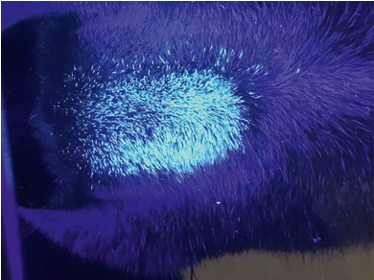
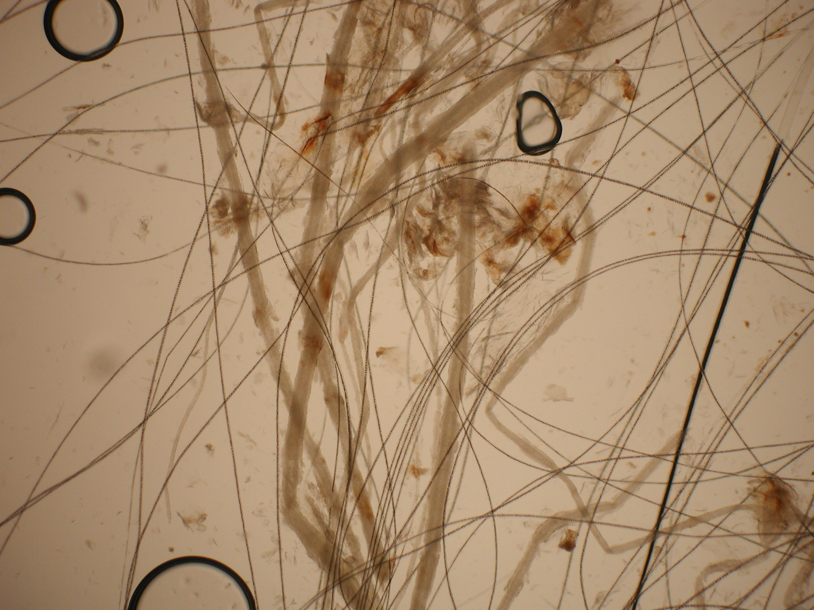
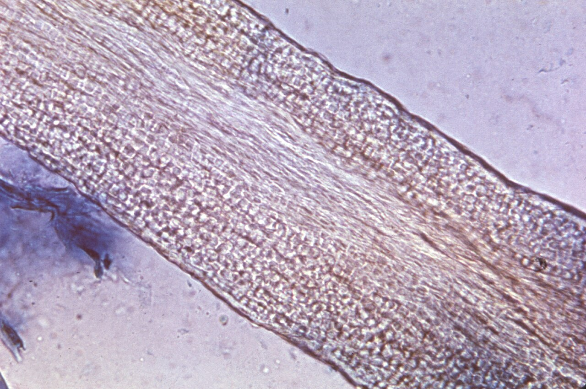
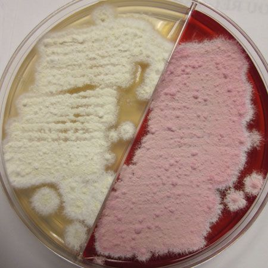
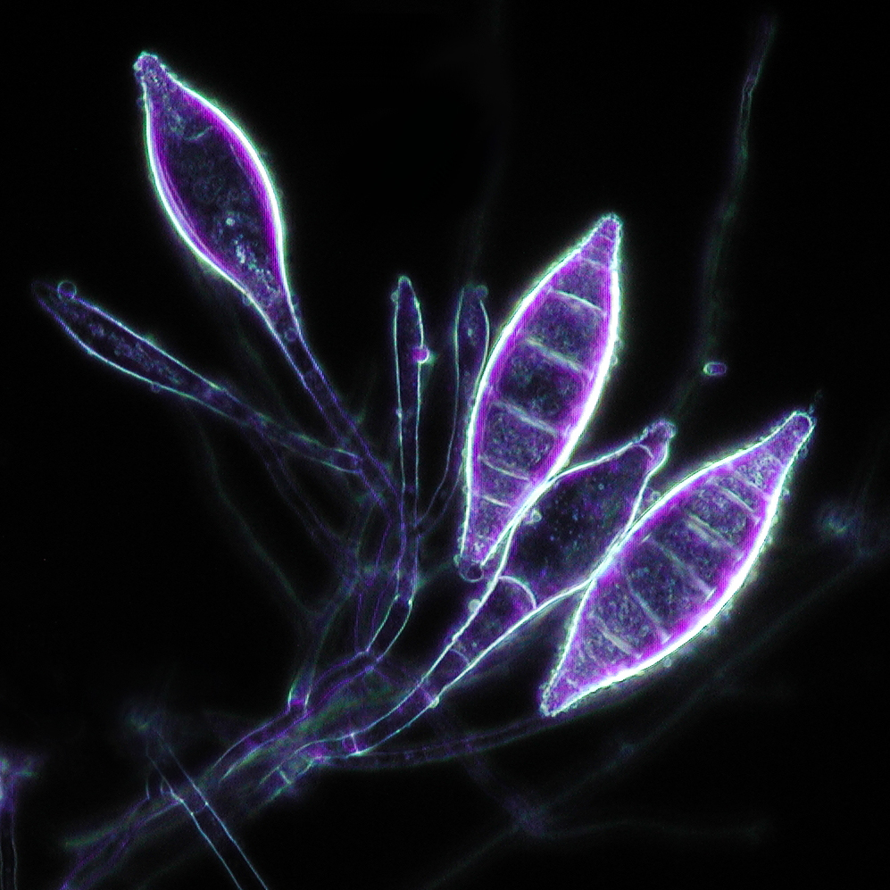
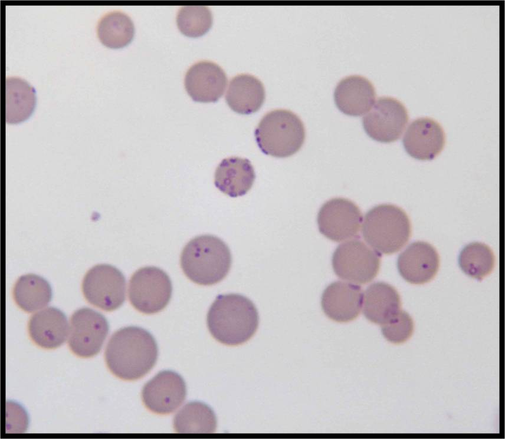

Canine Parvovirus (CPV-2)
A hardy, non-enveloped virus that is among the most heavily tested shelter pathogens. Content is drawn from your Chapter 14 notes and your case-report literature review, cross-checked against the ASV Standards of Care and standard references. Transcription and internal-consistency errors found in the source notes are corrected inline and badged.
🎧 NotebookLM Podcast
Clinical Management of Mutating Canine Parvovirus
Blueprint placement
- Physical Health of Animal = 29% of the exam. Infectious Disease = 12% of that domain, so roughly 12 of 350 exam questions.
- Sibling content in this domain: euthanasia, shelter design, nutrition and husbandry, parasites (already built in your Physical Health set).
Etiology & epidemiology noteslit review
- Non-enveloped, single-stranded DNA virus; genus Protoparvovirus, family Parvoviridae. The lack of an envelope is why it is environmentally hardy and resists many disinfectants.
- Antigenic evolution: original CPV-2 (1978) gave rise to CPV-2a, 2b, and 2c. Unlike CPV-2, the newer variants can infect cats. In cats, CPV-2a/2b are usually mild or unapparent, whereas CPV-2c can cause severe leukopenia and diarrhoea resembling feline panleukopenia.
- Animal-level risk: no or incomplete vaccination, age under 6 months (waning maternal antibody before vaccine-induced immunity), concurrent parasitism and weaning stress.
- Shelter-level risk: overcrowding, inadequate isolation of infected dogs, poor biosecurity and sanitation, inadequate or absent vaccination at intake, concurrent disease and parasitism, warmer seasons and rural source populations.
- Reportable / notifiable in some jurisdictions. CPV is a notifiable disease in some states, territories and countries, so a confirmed case (or an outbreak in a licensed shelter) may have to be reported to the relevant animal-health authority. Requirements differ between jurisdictions — check the rule that applies where you practise and build it into the outbreak response plan.
Pathophysiology & transmission noteslit review
- Transmission is faecal-oral and oronasal, with substantial indirect (fomite) spread because the virus persists in the environment.
- After oronasal entry the virus first replicates in oropharyngeal lymphoid tissue, then spreads via viraemia to the mesenteric lymph nodes, thymus, bone marrow and small-intestinal crypts.
- It targets rapidly dividing cells. Destruction of the intestinal crypt germinal epithelium prevents normal villous renewal, causing villous atrophy, malabsorption and diarrhoea with or without haemorrhage. Loss of the mucosal barrier permits bacterial translocation, leading to bacteraemia and endotoxaemia.
- Lymphoid and bone-marrow destruction causes the hallmark leukopenia, compounding immunosuppression and predisposing to sepsis. Weaning stress and concurrent intestinal parasites increase viral replication and disease severity.
- Incubation period: 4 to 14 days. Viral shedding begins about 4 to 5 days after infection (your notes), with the lit review citing 4 to 7 days, and can precede clinical signs. Shedding may persist for weeks.
- Exposure window for contact tracing: the 3 to 4 days before the case showed clinical signs. Because shedding starts before signs appear, any dog that shared housing, air space, runs, equipment, transport or unchanged staff/PPE with the case during those 3 to 4 days counts as exposed, even though the case looked healthy at the time. Work backwards from the date of onset when you build the exposed list.
Clinical forms & signs lit reviewnotes
Three forms
| Form | Who | Key points |
|---|---|---|
| Subclinical | Pups with maternal antibody; adults with low antibody | Mild or no signs (lethargy, transient inappetence) but still shed virus. The silent transmission risk in a shelter. |
| Gastroenteric | Pups ~1 to 6 months (most common) | Vomiting, diarrhoea (often haemorrhagic), anorexia, depression, dehydration, pyrexia, marked abdominal pain, shock. Severe leukopenia is the hallmark; endotoxaemia, DIC, hypoglycaemia-related neurological signs, panhypoproteinaemia. |
| Myocardial | Neonates infected in utero or in the first ~2 weeks of life | Acute myocarditis, dyspnoea, crying, retching, sudden death or congestive failure. Now rare due to vaccination of breeding bitches. |
Differential diagnosis lit review
- Infectious: endoparasites (Ancylostoma spp., Toxocara canis, Cystoisospora spp., Giardia); bacterial enteritis; other viruses (canine coronavirus, circovirus, rotavirus, distemper, adenovirus).
- Non-infectious: gastrointestinal foreign body or obstruction, intussusception, inflammatory bowel disease, stress colitis, haemorrhagic gastroenteritis (acute haemorrhagic diarrhoea syndrome), dietary indiscretion.
- In a high-risk young dog with vomiting, haemorrhagic diarrhoea and depression, CPV must be ruled out first to protect the population.
Diagnostics lit review
Point-of-care faecal ELISA antigen (POCT)
- Rapid, cheap, shelter-friendly. Detects all three variants. High specificity, variable to low sensitivity. A study of eight POCTs reported 100% specificity in unvaccinated dogs but sensitivity of only 22.9% to 34.3%.
- IDEXX SNAP (common in Australia): reported false-negative rate up to 51.3%, sensitivity ~31.4%, specificity 100%, overall accuracy ~68%. One study found sensitivity 77% to 80.4%, but only when faecal viral load exceeded 108 DNA copies per mg.
- False negatives arise from low faecal viral load, mild signs, poor sampling, or high faecal antibody binding the antigen.
qPCR (gold standard)
- High sensitivity (~94.4%) and specificity (~100%). The reference test for detecting low-level shedding.
- Caveat: recently MLV-vaccinated dogs can test positive on qPCR. Up to 23% of healthy vaccinates were positive between days 3 and 28 post-vaccination (your notes also cite "up to 2 weeks" from the staff text). This matters because shelters vaccinate at intake.
Diagnostic test performance (summary)
| Test / scenario | Performance |
|---|---|
| 8-POCT comparison (unvaccinated dogs) | 100% specificity; sensitivity 22.9 to 34.3% |
| IDEXX CPV SNAP (one report) | false-negative 51.3%, sensitivity 31.4%, specificity 100%, accuracy 68% |
| IDEXX CPV SNAP (another study) | sensitivity 77 to 80.4% (included high viral loads over 108 DNA copies/mg) |
| qPCR (gold standard) | sensitivity 94.38%, specificity 100%; can false-positive in recently vaccinated dogs |
Haematology and other tests
- Leukopenia is the common finding; anaemia, coagulopathy, electrolyte derangements, hypoglycaemia, hypoalbuminaemia may occur.
- Adjuncts: faecal flotation and PCR panels (co-infection), abdominal radiography and ultrasonography (rule out obstruction). Older methods (haemagglutination, virus isolation) are now rarely used.
Necropsy and pathology
- Gross: liquid or unformed colonic content; sub-serosal small-intestinal haemorrhage (tan to dark red), especially over Peyer's patches in the distal small intestine and ileum; flaccid or dilated small intestine; enlarged associated lymph nodes. Early disease is worst in the distal duodenum, with the jejunum more affected in severe cases.
- Pool lower-intestinal segments (duodenum, jejunum, colon) for POCT or qPCR to raise sensitivity and screen co-pathogens. Confirm with histopathology (acute lesions are near-pathognomonic) or immunofluorescence. Small-intestinal architecture is not restored for 2 to 3 weeks after infection.
Treatment & management lit reviewnotes
Decision to treat depends on resources and the ability to prevent transmission: a dedicated isolation ward (or foster or local-clinic isolation), appropriate PPE, and staff capacity. Prognosis with proper supportive care is generally good.
Fluid therapy std ref
- First line is a balanced isotonic crystalloid (for example Lactated Ringer's). Correct deficits over 12 to 24 hours in non-shocked patients; maintenance ~4 to 10 mL/kg/hr (about 120 mL/kg/day).
- Hypovolaemic shock: boluses of 15 to 20 mL/kg over ~15 minutes, repeated to a total of ~80 to 90 mL/kg, until perfusion is restored.
- Supplement potassium (commonly 20 mmol/L KCl in maintenance fluids) for hypokalaemia; treat hypoglycaemia with 25% dextrose 1 to 2 mL/kg IV then a 2.5 to 7.5% CRI. For severe hypoalbuminaemia or third-space loss, consider synthetic colloid or fresh-frozen plasma.
Antibiotics and stewardship lit review
- Broad-spectrum cover is indicated because of bacterial translocation, endotoxaemia and neutropenia. Inpatient combinations include ampicillin plus an aminoglycoside (for example amikacin, only after rehydration to protect the kidneys).
- Your notes list cefovecin as a convenient single-dose subcutaneous option for outpatient or low-resource settings; this is retained, with the stewardship caveat below.
Antiemetics
- Maropitant (1 mg/kg SQ or IV q24h, NK-1 antagonist, usually first line), ondansetron (0.5 mg/kg IV q8h), metoclopramide (0.5 mg/kg IV q8h). All three reduce vomiting frequency and severity comparably.
- Caution: maropitant in puppies under 8 weeks because of the risk of bone-marrow hypoplasia.
Nutrition
- Early enteral nutrition, started before vomiting fully resolves, shortens recovery and improves weight gain. A naso-oesophageal or nasogastric tube is ideal (can stay up to 7 days); syringe feeding is an alternative.
- Start a liquid recovery diet at ~25% of resting energy requirement (RER), building to 100% by days 2 to 4. Use a palatable, digestible, calorie-dense recovery formula.
Analgesia and anthelmintics
- Opioids for visceral pain (buprenorphine, butorphanol, fentanyl, hydromorphone); avoid NSAIDs (GI and renal risk in dehydrated, ulcer-prone patients). Lidocaine CRI is an adjunct.
- Empirical broad anthelmintic cover is warranted: co-infection occurs in up to ~23% of cases and is most common in dogs under 6 months. Examples: pyrantel, fenbendazole; add targeted therapy for Giardia or Cystoisospora as indicated.
Canine parvovirus monoclonal antibody (CPMA) lit review
- New therapeutic (Elanco), available from 2024. A single IV dose of 0.2 mL/kg (dogs ≥8 weeks) raises protective antibody titres within 24 hours.
- Prognosis: an experimental challenge study reported 0% mortality (all treated dogs survived, vs ~57% mortality in untreated controls) and real-world data ~93% survival, with faster resolution of vomiting, fever, inappetence and lymphopenia. A shelter study (JSMCAH) found shorter, cheaper treatment and ~1.9 fewer hospital days, though its mortality difference (6% treated vs 12% control) was not statistically significant. Manufacturer pricing is roughly 220 USD per vial for a 5 kg (11 lb) dog, with larger dogs needing multiple vials.
Miscellaneous and disproven options
- Oseltamivir: may correlate with weight gain but does not shorten hospitalisation or improve bloodwork. Wider antiviral use raises human public-health concerns.
- Immune or hyperimmune plasma: randomised data show no significant survival or clinical benefit (hyperimmune plasma lowered 24-hour shock index and lactate but did not change survival or hospitalisation). Your notes' caution about blood products is consistent with this.
- Faecal microbiota transplantation: associated with shorter hospitalisation, earlier resolution of diarrhoea and lower mortality in pups. Other adjuncts with limited evidence: recombinant G-CSF, N-acetylcysteine, recombinant feline interferon omega (the only licensed adjunct in Australia).
Outpatient and hybrid protocols lit review
- Suitable when the patient is under ~10% dehydrated, has BCS above 3/9, and is responsive.
- Protocol: subcutaneous fluids (30 to 60 mL/kg q6 to 12h for 2 to 3 days), maropitant (1 mg/kg SQ q24h), single-dose cefovecin (8 mg/kg SQ), plus oral electrolytes, glucose support, early feeding and deworming.
- The hybrid model gives IV fluids for the first 24 hours to correct dehydration, hypokalaemia and hypoglycaemia, then steps down to subcutaneous and oral care in shelter or foster.
Euthanasia thresholds lit review
- Consider euthanasia for poor-prognosis welfare states: BCS under 3/9, recumbency, or non-responsiveness, and in shelters that genuinely cannot isolate or treat safely.
Prognosis & biomarkers lit review
- Untreated mortality can reach ~91%. Higher risk: low BCS, intact male over 6 months, small or purebred dogs, comorbidities.
- Poor prognosis: marked persistent leukopenia (under 4.05 x 103/µL), failure of leukocytes to rise in the first 48 hours, severe hypoalbuminaemia, elevated CK-MB, persistently high cortisol at 72 hours, low presenting haematocrit, hypoglycaemia, hypermagnesaemia.
- Strong positive sign: a measurable rise in absolute lymphocyte count within the first 24 hours of admission carries a 100% positive predictive value for survival.
Outbreak response & risk categorisation lit reviewnotes
On detection, run a population risk assessment and sort animals into infected, exposed and unexposed. Move infected animals to isolation immediately. Subdivide the exposed group by age and vaccination history.
| Exposed tier | Definition | Action |
|---|---|---|
| High risk | Pups under 5 months, any vaccination history | Immediate MLV DAPP booster, 14-day quarantine, monitor for signs, faecal antigen test those that develop signs. |
| Moderate risk | Dogs 5 months or older, no vaccination history, or vaccinated less than 4 days before the case showed signs | Antibody titre test. Adequate titre, reclassify as low risk and place. Low titre, vaccinate and quarantine. |
| Low risk | Dogs over 5 months and vaccinated at least 4 days before the case showed clinical signs (so immunity had time to develop before the exposure window) | Proceed to placement like unexposed dogs. |
- The 4-day rule: a dose given at or after the start of the exposure window does not protect that dog. Protective immunity to an MLV parvovirus vaccine takes a few days to develop, so only a dog vaccinated 4 or more days before the case's onset of signs can be counted as low risk. Vaccinate the rest anyway — it just does not change their tier for this outbreak.
- Unexposed dogs: house in a clean area under strict biosecurity.
- Containment: epidemiological tracing to find the source and higher-prevalence intake areas; temporary intake hold; in extreme cases, depopulation to control spread.
Biosecurity lit reviewnotes
- Strict hand hygiene: wash with soap and water, use sanitiser, and change gloves between patients, especially for quarantine and infected groups.
- PPE scaled to risk tier. Full PPE (gloves, gown, shoe covers, ideally full-body suit) for infected animals; cover hands, trunk and sleeves.
- Laundering: wash bedding and toys with chlorine bleach at the hottest label-allowed temperature, but communal washing can spread virus; disposal of heavily contaminated soft items is often more practical.
- Bathe every dog before it exits isolation. The coat, paws and perineum carry CPV out of the ward, so a recovered or cleared dog is a walking fomite until it is washed. Bathe with a detergent shampoo (paying attention to the perineum and feet), dry the dog, and move it into a clean, freshly disinfected enclosure — never back into the one it was housed in. Do the bath in the isolation area with dedicated equipment, and disinfect the bathing area afterwards.
Sanitation ASPCAlit review
Clean first, then disinfect. Remove soiled bedding, faeces, food and paper, then clean surfaces with detergent or degreaser, because organic matter markedly reduces disinfectant efficacy. CPV is non-enveloped, so disinfectant choice matters.
| Agent | Dilution and contact time | Notes |
|---|---|---|
| Accelerated hydrogen peroxide | 1:32 for 10 min, or 1:16 for 5 min | Effective vs CPV; relatively organic-matter tolerant; longer diluted stability. |
| Potassium peroxymonosulfate | 1% for 10 min | Effective vs CPV. |
| Household bleach (sodium hypochlorite) | 1:32 for 10 min | Effective vs CPV; diluted solution stable only ~24 hours; inactivated by organic matter, needs precleaning and a rinse. |
| Quaternary ammonium | not reliable | Not effective vs CPV. Common in many clinics, so a frequent exam and practice pitfall. |
- Spot cleaning (tidy, fresh food and water, no animal move) reduces handling stress and is acceptable for infected cages that are not visibly soiled. Full clean when visibly soiled and after an infected animal vacates.
- Dishes generally clear viral contaminant after two wash cycles; disposing of contaminated bedding is often more practical. In foster care, house infected animals in easy-to-clean rooms (kitchen, bathroom). Outdoor runs of cement or gravel are easiest to disinfect with accelerated hydrogen peroxide.
- Waiting periods before re-using an enclosure are unnecessary after proper sanitation.
Prevention: vaccination & parasite control ASVnotes
- Use modified live virus (MLV) core vaccine. Treat any dog of unknown vaccination history as naive. Vaccinate at intake to counter immediate exposure.
- Shelter puppy series: begin at 4 to 6 weeks, then boost every 2 to 4 weeks until 20 weeks of age. The frequent schedule overcomes maternal antibody interference and high shelter exposure.
- Dogs older than ~18 to 20 weeks with unknown history at intake: one MLV DAPP, then a booster 2 to 3 weeks later.
- Owned-pet comparison: typically start 6 to 8 weeks, boost every ~4 weeks until 16 weeks, a final dose at 26 to 52 weeks, then boosters every 3 years.
- Pair vaccination with a parasite-control program at intake to reduce CPV severity and limit parasite spread.
Population management & regional differences lit review
- Capacity for Care (C4C) matches intake to housing, staffing, expertise and medical capacity. Shelters using C4C report fewer disease outbreaks, lower euthanasia, shorter length of stay (LOS), and higher live-release rates.
- Avoid overcrowding and prolonged LOS, both of which drive infectious-disease cycles.
- Regional note: C4C uptake is limited in Australia, no Australian veterinary degree currently offers a dedicated shelter-medicine track, and intake vaccination timing and paediatric desexing practices vary. A 2014 survey found most Australian veterinarians still favoured desexing at 6 months.
Shelter-acquired diarrhea — workup algorithm notesstd ref
Diarrhea in a shelter requires rapid risk stratification because CPV (life-threatening, highly contagious, environment-persistent) and non-CPV causes (Giardia, Salmonella, Campylobacter) require very different responses. The triage decision is: is this CPV until proven otherwise?
Step 1 — Triage by risk profile
| Risk level | Criteria | Immediate action |
|---|---|---|
| HIGH — CPV until proven otherwise | Unvaccinated or incompletely vaccinated; puppy under 5 months; acute hemorrhagic diarrhea with or without vomiting; lethargy; leukopenia on CBC | Isolate immediately; run CPV fecal antigen ELISA; PPE; separate from all susceptibles |
| MODERATE | Vaccinated dog; known complete series; mild small- or large-bowel diarrhea; bright, alert, afebrile; no vomiting | Isolate pending diagnostics; run fecal float + Giardia ELISA; monitor closely |
| LOW | Adult cat; single episode; diet change history; no cluster pattern; normal mentation and hydration | Monitor; fecal float if persisting >48 h; consider direct smear for Tritrichomonas |
Step 2 — Cluster vs. sporadic presentation
- Cluster (≥2 animals in same housing unit or same intake cohort): assume contagious cause. CPV, Salmonella (fecal-oral outbreak), and Campylobacter all cluster. Initiate enhanced sanitation of the shared area immediately — do not wait for test results.
- Sporadic (single animal, no contact cases): most likely Giardia, dietary indiscretion, stress colitis, or Tritrichomonas in cats. Still isolate pending diagnosis but outbreak protocols are not activated until a second case appears.
Step 3 — Diagnostic testing decision tree
- Any high-risk dog: CPV fecal antigen ELISA first. If positive, treat as CPV. If negative in a dog that was MLV-vaccinated within the prior 2 weeks, the result may be a vaccine-induced false positive — use clinical judgment and PCR confirmation if needed.
- Moderate-risk dog: fecal flotation (zinc sulfate centrifugation) for Giardia cysts + in-house Giardia ELISA or SNAP test (higher sensitivity). Fecal culture for Salmonella and Campylobacter if cluster is suspected or if diarrhea persists beyond 5–7 days.
- Cats with chronic large-bowel diarrhea: direct smear (fresh feces — within minutes) for Tritrichomonas motility; InPouch TF culture; modified Ziehl-Neelsen stain for Cryptosporidium oocysts; Giardia ELISA.
- Outbreak suspect: submit multiple fecal samples to a reference lab for PCR panel (CPV/FPV, Salmonella, Campylobacter, Giardia, Cryptosporidium). PCR panels provide rapid, sensitive, multi-pathogen results.
Step 4 — Pathogen-specific environmental management
| Pathogen | Disinfectant of choice | Notes |
|---|---|---|
| CPV / FPV | Bleach 1:32, AHP 1:32, or Virkon 1% — 10 min contact time | Quats FAIL. Environmental persistence up to 1 year. |
| Salmonella | Bleach, AHP, quats — all effective | Thorough mechanical cleaning first; zoonotic — staff PPE critical |
| Campylobacter | Standard bleach or AHP | Enveloped-like sensitivity; zoonotic — staff with GI symptoms: refer to occupational health |
| Giardia | AHP 1:32 (10 min); steam | Bleach alone is unreliable against Giardia cysts. Cold/dry environments kill cysts faster than warm/wet. |
| Cryptosporidium | 6% H₂O₂ (30 min) or steam cleaning (≥60°C (140°F)) | Bleach FAILS. Oocysts immediately infective. Highest disinfection challenge. |
Zoonotic staff risk summary
- Salmonella and Campylobacter: both are zoonotic; staff with diarrhea, nausea, or fever should be excluded from animal contact and evaluated by occupational health. Immunocompromised staff face higher risk.
- Cryptosporidium (C. parvum): significant zoonotic risk; immunocompromised staff should NOT handle diarrheic cats or litter boxes without double-gloved PPE.
- CPV and Giardia: NOT zoonotic from dogs/cats to immunocompetent humans. (Human Giardia species differs from canine/feline.)
Other canine enteropathogens (beyond parvo) std ref
Canine coronavirus (CCoV)
- Enveloped RNA virus with poor environmental survival and susceptibility to most common disinfectants — a direct contrast with hardy, non-enveloped CPV.
- Leukopenia is not routinely identified, the best single feature distinguishing CCoV from CPV.
- Strong juvenile predominance: 66.3% of puppies with diarrhoea versus only 6.9% of clinical adults. Incubation is short (1 to 4 days); shedding lasts 3 to 14 days (occasionally months on PCR).
- Usually self-limiting → supportive care only. A vaccine exists but is not recommended (mild self-limiting disease, incomplete protection). Co-infection with CPV is common, so test for CPV in any CCoV-compatible case.
- Pantropic CCoV (the CCoV-II variant CB/05) causes multi-organ disease with lethargy, vomiting, diarrhoea, fever and convulsions; all documented natural infections were fatal, but it is rare.
Clostridium perfringens & C. difficile
- Both are part of the normal canine GI flora; disease is toxin-mediated and follows disruption of the intestinal biome (for example after antibiotics) or fecal-oral spread from infected dogs or contaminated food.
- C. perfringens was the only enteropathogen statistically more common in diarrhoeic dogs than in normal dogs in one study (Tupler et al. 2012).
- Treat more severe cases with metronidazole, amoxicillin or tylosin; avoid tetracycline (high resistance risk). No evidence they are zoonotic from dogs.
Canine parvovirus-1 (minute virus of canines)
- A separate virus from CPV-2, causing disease only in neonates under 3 weeks of age: enteritis, pneumonitis, myocarditis and/or lymphadenitis with high mortality — a recognised cause of fading puppy syndrome (it can also cross the placenta, causing fetal death and birth defects).
- CPV-2 antigen tests and CPV-2 vaccines are not effective for CPV-1.
Canine Distemper (CDV)
A "smouldering" pathogen: an enveloped, environmentally fragile virus that nonetheless persists in shelters because intake populations are often susceptible and mild or vaccinated cases go unrecognised while shedding. Built from your CDV study notes, with expert additions from your gap analysis (phase-based sampling, the maternal-antibody mechanism, inclusion-body pathology, and the serology/PCR risk matrix) badged as standard reference. The source notes were cleaner than the CPV set, so this tab carries reconciliations and one figure to verify rather than multiple hard corrections.
🎧 NotebookLM Podcast
Canine Distemper Virus — Shelter Medicine Mastery
Blueprint placement
- Same subdomain as CPV: Infectious Disease, ~12% of the Physical Health of Animal domain (29% of the exam).
- Heavy overlap with the Canine Infectious Respiratory Disease (CIRD) complex; distinguishing smouldering CDV from "just kennel cough" is a recurring exam theme.
Etiology & epidemiology notes
- Enveloped, single-stranded RNA virus; genus Morbillivirus, family Paramyxoviridae. The envelope is why it is labile and easily killed by disinfectants, in contrast to CPV.
- Dogs are the primary host and dog-to-dog spread is the most likely source. Also infects ferrets, coyotes, skunks and raccoons; the raccoon population can act as a substantial community reservoir. It does not infect domestic cats.
- CDV does cause disease in large and exotic felids (for example lions and tigers) even though it does not infect domestic cats. No zoonotic transmission of CDV to humans has been demonstrated.
- Biotypes vary in incubation and disease pattern (for example the classic acute Snyder Hill / R252 strain and the A75 isolate). Despite multiple biotypes there is only one serotype, which is why MLV vaccines developed in the late 1950s and early 1960s remain highly effective.
- Outbreaks reflect gaps in vaccination, not vaccine breakthrough by new biotypes. Dogs with adequate antibody do not develop signs or shed.
Transmission notes
- Most common route is direct contact between sick and susceptible dogs, plus aerosol/droplet inhalation. Recognition and isolation of respiratory cases is therefore critical in group housing.
- Shed in all secretions and excretions depending on stage. A lower Ct (higher viral load) on RT-PCR suggests a dog is more likely to transmit.
- The virus is labile, so fomite and environmental spread are less important than for hardier viruses, but because it only needs to survive minutes on hands, equipment or kennels, fomite spread is still relevant in a busy shelter.
- Mildly affected and recovering dogs help maintain transmission cycles, which is the core of the "smouldering" problem.
Pathogenesis & risk factors notes
- Initial replication in respiratory lymphoid tissue. Phagocytes carry virus to local lymph nodes, then it replicates in macrophages/monocytes and T and B lymphocytes and disseminates to lymph nodes, spleen, bone marrow and Kupffer cells.
- Early infection causes severe T and B lymphocytopenia and macrophage dysfunction, producing marked immunosuppression that can last weeks (biotype dependent).
- Risk factors: unvaccinated animals; any age can develop severe disease, but puppies suffer higher morbidity and mortality because they are more often immunologically naive and harder to immunise through maternal antibody.
- Puppies under 18 to 20 weeks must be considered potentially susceptible regardless of vaccination history.
Incubation & clinical course notes
- Incubation ranges from under 1 week to 6 weeks; signs usually develop faster and only rarely as late as 6 weeks.
- Biphasic. Earliest sign is pyrexia within days to a week, often missed in shelters, coinciding with immunosuppression that can begin as early as 3 days post-infection.
- Then malaise and respiratory signs (cough, mucopurulent nasal discharge) with common ocular involvement (discharge, squinting), in roughly the first to third week.
- Later GI signs (vomiting, diarrhoea with tenesmus, bloody faeces; intussusception risk) and dramatic body wasting. Dehydration and systemic collapse risk secondary bacterial pneumonia.
- Skin pustules or a rare measles-like rash in a small percentage. Digital and nasal hyperkeratosis ("hard pad") is described and often associated with neurologic disease.
- A careful ocular examination is indicated in all suspects: conjunctivitis, mucopurulent discharge, keratoconjunctivitis sicca with ulceration, grey-pink retinal lesions (later seen as hyper-reflective scars), and rarely optic neuritis with sudden blindness.
- Neurologic signs (myoclonus, "chewing-gum" petit mal, salivation, progressing to grand mal seizures) may occur with systemic signs or appear 1 to 3 weeks or longer after other signs resolve. This is a poor prognosis.
- Subclinical infection occurs; mild cases mimic CIRD but still shed and, unrecognised, drive transmission. CDV plus CIRD often means severe pneumonia and death.
Recovery, shedding & carrier state notes
- Shedding begins by about 1 week post-infection, sometimes before signs, and usually resolves soon after signs resolve, but may persist up to 16 weeks.
- There is no true carrier state, though recovered dogs can remain infectious for a period after signs resolve.
- Define recovery with RT-PCR after signs resolve: a positive suggests ongoing contagiousness, a negative suggests lower infectious risk. Viral load normally falls as signs resolve.
- A small fraction stay RT-PCR positive at low levels for months, with intermittent shedding (so one negative does not fully clear them). Manage by housing away from susceptibles, ideally in foster or adoption homes with immunised dogs.
- Recovered dogs are normally immunocompetent and can be vaccinated and desexed without extra individual precautions. Do not delay CPV vaccination because of CDV infection.
Diagnosis notesstd ref
Early disease mimics CIRD and other system-specific diseases. Neurologic signs in any individual, or a marked rise in CIRD frequency or severity, should trigger diagnostic work-up of both the individual and the population.
| Test type | Clinical utility | Interpretation notes |
|---|---|---|
| RT-PCR | Main diagnostic tool | High sensitivity; change gloves between dogs to avoid false positives from contamination. |
| Ct / viral load | Contextual | Lower cycle threshold (higher load) means higher transmission potential. |
| Vaccine interference | Caution | Recently MLV-vaccinated dogs may test positive (low load / high Ct) for ~2 weeks. The canarypox-vectored recombinant vaccine is the only one not detected on PCR. |
| Serology | Outbreak tool | Useful for assessing immune status during outbreaks; less useful for intake screening, and not reliable where dogs are vaccinated at entry. |
| Post-mortem | Definitive | IHC, FA or PCR on tissues; inclusion bodies are diagnostic. |
Quantitative interpretation std ref
Sample selection by disease phase std ref
- Early/acute: respiratory secretions (nasal, deep laryngeal swabs) or buffy coat. Conjunctival swabs yield the least virus and are often omitted.
- Systemic/GI: urine sediment or rectal samples can yield higher load as the respiratory tract clears.
- Neurologic: CSF or post-mortem brain and bladder epithelium. IHC can also be run on antemortem conjunctival scrapes, urine sediment or buffy coat.
- Shedding can be intermittent in late or recovery phases, so a single negative may not rule out CDV; repeat testing when suspicion is high or when defining recovery.
Histopathology std ref
- CDV produces both intracytoplasmic and intranuclear eosinophilic inclusion bodies in epithelial cells (tracheal, gastric, urinary bladder) and astrocytes. This is the classic board distinction from other viral pathogens.
Diagnostic pathway — which test & what each result means std ref
shedding is intermittent — repeat if suspicion is high
wild-type likely — even if recently vaccinated → isolate, manage as a case
recently MLV-vaccinated (≤2 wk) & no signs → likely vaccine virus, recheck · signs present / not recently vaccinated → possible early or mild wild infection, correlate & repeat
Serology / PCR risk matrix std ref
Pairing an antibody titre with RT-PCR lets you categorise asymptomatic exposed dogs without waiting out the full incubation period.
| Antibody titre | RT-PCR | Category | Disposition |
|---|---|---|---|
| Positive | Negative | Low risk / protected | Immune and not shedding; clear for immediate adoption or transfer. |
| Negative | Positive | Incubating / infectious | Actively infected, no immunity; isolate immediately. |
| Negative | Negative | Susceptible | No current infection but unprotected; vaccinate and quarantine away from the outbreak footprint. |
A positive titre with a positive PCR usually means recent infection with developing immunity or recovery-phase shedding; interpret by quantitative load, signs and history.
Treatment notes
- No antiviral exists; care is supportive with treatment of secondary infection. Dogs that avoid neurologic disease have the best prognosis.
- Respiratory disease: broad-spectrum bactericidal antibiotics. GI signs: broad-spectrum parenteral antibiotics, with B vitamins recommended.
- Neurologic disease is commonly less responsive than supportive care for respiratory and systemic signs; myoclonus may be manageable but neurologic disease is often progressive and irreversible.
- In every treatment decision weigh contagion risk to other animals against the individual's prognosis and welfare.
Prevention & vaccination ASVnotes
- Vaccinating all dogs and puppies at or before intake is the single most important CDV control measure, combined with management that lowers infectious dose and exposure.
- MLV CDV is preferred (lower cost than recombinant; can competitively occupy viral binding sites, giving protection before humoral immunity develops). Recombinant (rCDV) can give faster protection in the face of maternal antibody.
- Onset of protection is rapid: rCDV has protected against challenge as early as hours to 1 week after administration, though full immunity may take 3 to 5 days. Early vaccination prevents severe neurologic disease and death.
- Handling: CDV is labile, so reconstitute only shortly before use and do not leave at room temperature. Give SQ or IM (the CDV vaccines available in Australia are given SC); if any of an SC dose is not delivered, repeat a full dose immediately.
- Pregnant dogs: use canarypox rCDV, because MLV in a naive dam can rarely infect fetuses (death, resorption, abortion). Dams with antibody will not be infected by vaccine virus.
- Non-canine species (ferrets, raccoons): use the purpose-built ferret rCDV vaccine, not MLV, to avoid adverse reactions.
Timing
- Vaccinate every animal over 4 to 5 weeks at or before arrival regardless of health status (ASV cites from 4 weeks of age, boosting every 2 weeks to 20 weeks).
- Most dogs over 16 to 20 weeks are protected by a single dose, but an initial series of 2 doses 2 to 3 weeks apart is generally recommended to cover handling or administration errors.
- Puppies should receive a final dose at or after 20 weeks, even after adoption.
- Long-stay dogs do not need revaccination more often than every 3 years (AAHA).
Environmental control & housing notes
- Enveloped and rapidly inactivated by most disinfectants and by heat. Temperature-dependent survival: half-life ~4 to 5 minutes at 56°C (132.8°F), ~10 minutes at 45°C (113°F), 1 to 3 hours at body and room temperature (37 and 21°C / 98.6 and 69.8°F), and 9 to 11 days at 4°C (39.2°F).
- Even short persistence matters in an outbreak. Target common-contact surfaces: animal-control vehicle compartments, intake pens used for sick animals, and staff clothing.
- Minimise co-mingling, exposure and stress. Co-mingling is generally not recommended; if used, all-in/all-out housing is essential so each group's exposure starts fresh.
- Isolate sick animals promptly, ideally a separate building or ward with separate airflow and PPE. If true isolation is impossible, separate by at least 2 empty kennels and never care for sick animals before healthy ones.
- Separation matters most for puppies (maternal-antibody interference leaves many susceptible after vaccination). The best plan for susceptible juveniles is housing outside the shelter.
Outbreak management notes
Risk factors
- Sporadic or delayed vaccination; failure to examine or vaccinate on intake; crowding beyond capacity for care; misused kennels; group housing that is not all-in/all-out; no separation of sick and healthy; poor disease detection; treating all respiratory disease as benign kennel cough; transfers from CDV-endemic communities.
Risk assessment
- Antibody testing is a practical alternative to long quarantine given the long incubation period. Dogs without signs and with sufficient antibody are very unlikely to become infected. Where monitoring has been inconsistent, pair serology with RT-PCR even in asymptomatic dogs to catch recovery-phase shedders.
- Risk categories never guarantee an individual outcome but guide isolation, clearing for rescue/adoption, and limiting how many dogs need quarantine. Move titre-confirmed low-risk puppies out of exposure as fast as possible.
- Why move titre-positive low-risk puppies out fast: puppies under 5 months may carry maternally derived antibody that is detectable on serology but cannot be well differentiated from active immunity. Passive immunity lacks the memory-cell backup of active immunity (so it is less protective) and is constantly degrading, leaving the pup increasingly susceptible over time. In-house titre kits (VacciCheck and Synbiotics TiterCheck) support this triage, but interpret a positive in a young puppy with caution.
Quarantine for high-risk exposed dogs
- Separate high-risk dogs from recently admitted dogs, recently vaccinated dogs and puppies under 20 weeks. Historically held 4 to 6 weeks. A positive serology paired with a negative RT-PCR can confirm immunity well before the full incubation period.
Creating a clean break
- During an outbreak, every incoming dog without exception must be vaccinated at or within minutes of entry and placed in a clean, disinfected kennel.
- House incoming dogs at least 25 feet (7.6 m) from moderate-to-high-risk dogs and from symptomatic dogs, ideally a separate building or ward with separate staff and supplies.
- Titre-confirmed low-risk dogs may be housed with new incoming dogs if space requires.
The "snaking" clean break std ref
A dynamic alternative when truly separate wards are not available and incoming dogs cannot be kept fully apart from exposed dogs.
- Maintain a moving gap of at least 25 to 40 ft (7.7 to 12.2 m) between exposed dogs and incoming dogs, created with empty kennels, full-width curtains hung across aisleways, and clear visual markers (signage, rope or chain barriers).
- Use designated equipment and biosecurity precautions for each side, exactly as if the areas were separate buildings or wards.
- Relocate the break as the populations shift: as the exposed/at-risk group shrinks (through transfer or clearance) and intake grows, the boundary "snakes" along to accommodate the changing flow. Not ideal, but it has resolved outbreaks and lowered mortality.
Canine Infectious Respiratory Disease (CIRD)
A multifactorial complex, not a single disease: many pathogens plus host and environmental stressors. Usually mild and self-limiting in a home, but a major welfare and management problem in shelters. Built from your CIRD notes, with high-yield additions from your gap analysis (the SQ Bordetella vaccine hepatic risk, the ciliostasis synergy, leukogram interpretation, PCR timing, and antibiotic stewardship) badged as standard reference. The source was clean, so this tab carries clarifications rather than hard corrections.
🎧 NotebookLM Podcast
Stopping Lethal CIRD Outbreaks in Shelters
Overview & the triad
- Etiology is host + agent + environment. Many CIRD agents are recovered from clinically healthy dogs; without environmental stressors they pose little risk to immunocompetent dogs in homes.
- Intake co-infection is the norm: of asymptomatic dogs sampled on shelter intake, 47.7% were PCR-positive for at least one CIRD pathogen and 18.7% for two or more (Lavan & Knesl 2015). Apparently healthy intake dogs are already seeding the population.
- Low mortality and self-limiting in general, but high morbidity in shelters without timely vaccination, population monitoring, capacity for care and biosecurity.
- Risk factors: crowding, many vulnerable dogs, physiologic stress, weak or inconsistent protocols, poorly managed transport, outdated facilities, prolonged length of stay (LOS), inadequate isolation, poor air quality.
- CDV and CIV can mimic routine CIRD early and are managed very differently (titres, risk assessment, long quarantine). Raise suspicion on history, advancing signs, and which animals are affected.
Pathogen roster notes
| Pathogen | Type | Key points |
|---|---|---|
| CPiV | Enveloped RNA | Primary; honking cough; sheds 8 to 10 days; subclinical/carrier state despite vaccination; mucosal IgA more protective. |
| CAV-2 | Non-enveloped DNA | The only environmentally stable CIRD virus; parenteral vaccine gives prolonged (4+ year) immunity; alcohol and quats less reliable. |
| CRCoV | Enveloped RNA | "Lawnmower virus"; denudes cilia; no vaccine; betacoronavirus distinct from GI coronavirus (first detected 2003). |
| CHV | Enveloped DNA | Fatal in neonates; latent, recrudesces with stress. |
| CnPnV | Enveloped RNA | Emerging; related to human RSV; no vaccine yet. |
| CDV | Enveloped RNA | Mimics CIRD early; managed differently (titres, long quarantine). |
| CIV | Enveloped RNA | Influenza A; managed differently; highly mutable; low mortality (~5 to 8%); H3N2 sheds up to 28 days. |
| Bordetella bronchiseptica | Gram-negative | ZOONOTIC; subclinical carriage; sheds weeks to months; intranasal vaccine superior to parenteral. |
| Mycoplasma cynos | Wall-less bacterium | Contributor; sialidase virulence factor; often co-infects with CPiV. |
| Streptococcus zooepidemicus | Bacterium | ZOONOTIC; primary; peracute haemorrhagic pneumonia and sudden death in 24 to 48 h. |
Clinical-impact grouping (memory aid) notes
Group by clinical impact rather than taxonomy to make the roster memorable.
| Category | Pathogens | Key clinical hook |
|---|---|---|
| The Drivers (primary) | Bordetella bronchiseptica, Strep. zoo | Bordetella: zoonotic, IN vaccine beats parenteral. Strep zoo: peracute, fatal haemorrhagic pneumonia. |
| The Disruptors (ciliary damage) | CRCoV, Mycoplasma cynos | CRCoV denudes cilia (lawnmower). Myco: sialidase virulence factor, frequent co-infector. |
| The Mimics (high severity) | CDV, CIV | Often mimic CIRD early; require separate outbreak management protocols. |
| The Minor / Latent | CPiV, CAV-2, CHV, CnPnV | CAV-2 environmentally stable, parenteral vaccine 4+ years. CHV fatal in neonates, stress-induced latent recrudescence. |
Pathogenesis synergy std ref
- Enveloped viruses (CPiV, CRCoV, CIV, CDV, CnPnV, CHV) are labile and easily disinfected. The non-enveloped CAV-2 is the lone environmentally stable virus and resists alcohol and quats. RNA agents (CRCoV, CIV, CPiV) mutate faster than DNA agents.
- CPiV often co-infects with M. cynos and B. bronchiseptica.
Clinical signs & bloodwork notesstd ref
- Classic CIRD: hacking, paroxysmal honking cough with mild to moderate nasal discharge, with or without mild pyrexia. Most dogs stay bright, active and appetent. Coughing and retching can be mistaken for vomiting.
- Anorexia and malaise are red flags for advancing or lower-airway disease.
- CBC is not diagnostic for CIRD but helps stage it: a stress leukogram (mild neutrophilia, lymphopenia, eosinopenia) fits uncomplicated viral URI, whereas a marked leukocytosis with a left shift (band neutrophils) plus fever indicates descending bacterial pneumonia.
Diagnosis notesstd ref
- PCR on nasal, conjunctival or oropharyngeal swabs is the main antemortem test. Change gloves between patients; high sensitivity means contamination causes false positives.
- Timing is everything: sample acutely ill dogs within 1 to 2 days of onset. After 5 to 7 days of signs the shedding window has largely closed, PCR loses value, and paired (acute and convalescent) serology is indicated.
- Interpret positives with vaccination history (MLV within ~4 weeks can be positive). qPCR can help separate wild-type from vaccine virus by load, though not in every case.
- Sampling strategy: test a small representative group of acutely ill dogs (a minimum of about 5 to 10 dogs, or 10 to 30% of the population); favour acutely ill dogs because some agents such as CIV shed only briefly. Any single positive for an emerging agent (for example CIV) in a naive population is significant.
- Necropsy gold standard for a viral agent: PCR of fresh respiratory tissue plus histopathology of viral pneumonia. Culture matters for Bordetella (rising MDR) and for identifying Strep zoo.
Prevention & vaccination ASVnotes
- Core parenteral DHPP / DA2PP covers CDV, CAV-2, CPiV. Add an intranasal kennel-cough vaccine (Bordetella, often with CPiV and CAV-2). Vaccinate at intake.
- For mucosal respiratory pathogens, intranasal beats parenteral (faster onset, mucosal IgA). The exception is CAV-2, where parenteral gives prolonged immunity (at least 4 years). IN protection lasts about 12 to 13 months for Bordetella and CPiV.
- Heterologous prime-boost (IN plus parenteral, for example IN Bordetella and CPiV with parenteral CPiV and CAV-2) gives better clinical response than either route alone; consistent with WSAVA and AAHA, which treat parenteral CPiV as optional.
- Only CDV vaccine induces sterilising immunity. The others reduce infection rate, shedding duration and severity but do not prevent colonisation, shedding or signs.
- Vaccine failure still occurs (handling, storage, administration, immunosuppression, maternal antibody). Dogs vaccinated against Bordetella can shed attenuated organism for ~2 weeks.
Sanitation notes
- All CIRD pathogens are inactivated by sodium hypochlorite (bleach), accelerated hydrogen peroxide and potassium peroxymonosulfate. Alcohol over 60% works except against CAV-2 (non-enveloped).
- Quaternary ammonium is less reliable here: weak against Gram-negative Bordetella and against non-enveloped CAV-2, and inactivated by hard water, organic debris and detergent.
- Remove gross organic debris first; disinfectants do not work through organic matter. Note that Strep zoo and Bordetella have been recovered from ET tubes even after standard cleaning.
- Droplets travel up to ~6 m (19.7 ft) during coughing and sneezing. Use equipment that limits aerosolisation (hose-end foamers, not high-pressure sprayers); excess moisture aids pathogen survival.
Housing, air quality & C4C notes
- Double-compartment housing allows cleaning without moving dogs through water or chemicals and reduces handling. Small wards of 6 to 8 enclosures enable cohorting, deep cleaning between groups, and lower noise.
- Solid barriers between dogs; sealed (not painted) concrete; floors sloped to drains. Avoid high-pressure hoses (aerosolisation and humidity).
- Air: decouple temperature control from ventilation; separately zoned HVAC for isolation versus healthy housing; aim for 10 to 12 air changes per hour and ideally 100% outdoor air. Shared HVAC matters less than crowding, poor enclosures, moisture and sanitation.
- Capacity for Care (C4C): manage intake, plan efficient pathways, provide preventive care. Crowding and rising LOS are profound CIRD risk factors; lower daily inventory shortens LOS and lowers pathogen load. Cortisol spikes at intake settle toward home levels in about 3 to 5 days; enrichment and playgroups (including for mildly affected cohorts) help.
Surveillance, quarantine & isolation notes
- Daily population rounds and prompt isolation of affected dogs lower environmental load. Track CIRD frequency to catch rising incidence early.
- Healthy dogs with no known exposure or signs are not routinely quarantined (LOS is the single greatest risk factor). Quarantine dogs recently exposed or transferred from high-risk areas for CIV or CDV.
- Incubation is 3 to 10 days for most agents; CDV needs a minimum 14-day quarantine and can take up to 6 weeks, though quarantine that long is not recommended in shelters.
- Isolate symptomatic dogs immediately, ideally with separate HVAC and double-sided housing. Typical release at 7 to 10 days with clinical improvement, earlier if signs resolve or housing risk is managed. Long shedders (CDV, CIV H3N2, Bordetella, Mycoplasma) warrant caution before mixing with susceptibles. Use a harness, not a neck collar, on isolation walks.
Treatment notesstd ref
- Many cases are viral and self-limiting, so antibiotics are often unwarranted for mild disease in a home, especially in the first ~10 days. In shelters, early empirical antibiotics are often justified because dogs are stressed, under-vaccinated and heavily exposed.
- Stewardship: keep first-line empirical therapy to doxycycline or amoxicillin-clavulanate, and reserve macrolides and fluoroquinolones (azithromycin, enrofloxacin, marbofloxacin) for non-responders or confirmed resistant lower-airway disease on culture and sensitivity from an endotracheal or bronchoalveolar sample.
- Strep zoo needs penicillins (penicillin, ampicillin, amoxicillin); it is resistant to doxycycline. In an outbreak, prophylactically treat all exposed dogs with a beta-lactam (penicillin G needs daily dosing and is cheap; cefovecin is an option but costly), because disease is rapid and deadly.
- Antitussives only for severe, debilitating, non-productive dry cough, always with antibiotic cover, and never when an inflammatory leukogram, pyrexia or cranioventral consolidation suggests pneumonia (suppressing a productive cough promotes lower-airway colonisation). Butorphanol is the only on-label option; others (hydrocodone, dextromethorphan/guaifenesin, maropitant) are extra-label.
- Supportive care: calories and fluids, control of secondary infection, and reduction of physiologic and emotional stress across macro and micro environments.
Transport & relocation std ref
- Interstate transfer in the US legally requires a valid Certificate of Veterinary Inspection (CVI) / health certificate: a veterinarian must examine the dog and certify it "appeared to be free of any infectious disease" that could endanger other animals or public health.
- Requirements vary by destination state; some states (for example Massachusetts and Connecticut) have created shelter- and rescue-specific relocation procedures. Check the USDA APHIS interstate pet-travel database and, when in doubt, consult the state veterinarian before crossing state lines.
- Moving dogs with clinical CIRD across state lines is often not legally permissible and is actively discouraged.
Foster & adoption placement std ref
- Because every CIRD vaccine except CDV is non-sterilizing, vaccinated dogs already in a home can still be infected. Risk-assess both the affected dog and the receiving home (resident animals, household health) before placing a CIRD case in foster or adoption.
- B. bronchiseptica is zoonotic to immunocompromised people — risk factors include HIV, organ transplantation, long-term steroid therapy, splenectomy, chemotherapy for malignancy and pre-existing respiratory disease.
- The same organism also infects cats, ferrets and rabbits (and other small mammals), so screen the species mix in the home, not just the people.
Canine Influenza (CIV)
An acute influenza A respiratory infection and one of the CIRD "mimics" that is managed on its own track. Low prevalence in the general dog population, but a single infected dog can ignite an explosive, community-impacting shelter outbreak. Built from your CIV notes, with high-yield additions from your gap analysis (swab mechanics, the mucociliary-escalator mechanism, human-kit limits, and the length-of-stay paradox) badged as standard reference. The source was clean, so this tab carries clarifications rather than hard corrections. See the CIRD tab for where CIV sits in the wider complex.
🎧 NotebookLM Podcast
Controlling H3N2 Canine Influenza in Shelters
Epidemiology & subtypes notes
- Influenza A, an enveloped RNA virus, subtyped by surface haemagglutinin (H) and neuraminidase (N) proteins (18 H and 11 N subtypes identified, each antigenically distinct).
- Two canine subtypes: H3N8 and H3N2. General-population prevalence is low (under ~3 to 5% for both), so high-density housing is the key risk multiplier.
- Dogs are a potential mixing vessel for mammalian and avian influenza, which underpins the reassortment and zoonotic concern.
| Subtype | Origin & history | Host range | Key shelter behaviour |
|---|---|---|---|
| H3N8 | Equine origin (2003 to 2004; racing greyhounds) | Dogs only | Patchy distribution; not actively circulating in the US anymore. |
| H3N2 | Avian origin (Korea 2007, US 2015) | Dogs, cats, ferrets, guinea pigs | Highly contagious; sporadic regional outbreaks seeded by Asian imports. |
Why CIV cannot self-sustain (R₀) std ref
- The basic reproductive number in the general dog population is only about 1.0 for H3N8 and 1.0 to 1.5 for H3N2 — barely at the threshold for self-sustaining spread.
- What limits CIV is contact heterogeneity, not transmission efficiency: most dogs simply do not contact enough other dogs. Sustained circulation therefore needs high-density hotspots (a few large shelters acting as a reservoir) or repeated reintroduction from other populations.
- Named enzootic hotspots in the US: Florida, Colorado and New York.
Transmission, incubation & shedding notes
- Spread by aerosols, droplets, direct contact and fomites. Distance for CIV is unknown, but the human influenza model travels over ~50 feet (15 m).
- Incubation 2 to 5 days. Peak shedding is 2 to 4 days post-infection, overlapping incubation, so dogs are often most contagious before or at the onset of signs.
- Most dogs shed up to 7 days (some to 10). H3N8 shedding ends ~7 to 10 days; H3N2 can shed intermittently beyond 21 days.
- Subclinical infection occurs but there is no true carrier state: once replication and shedding stop, the dog is no longer contagious.
Clinical signs & morbidity notes
- High morbidity, low mortality. Introduced into a naive population, CIV causes an explosive onset of kennel-cough-like disease in most dogs within ~2 weeks. Dogs of all ages are susceptible regardless of prior vaccination.
- About 80 to 90% develop signs; 10 to 20% are subclinical shedders, so treat all exposed dogs as an infectious risk.
- Typical signs: cough, fever, mild anorexia, mucopurulent nasal discharge; recovery in 10 to 14 days, nearly all by 30 days. About 1 to 20% progress to severe lower-airway disease (high fever, dyspnoea, productive cough). Pneumonia fatality 5 to 8%.
- Severe disease usually reflects co-infection with other CIRD agents or comorbidity. CIV cannot be distinguished from other CIRD on signs alone; lab testing is required.
- Peracute fatal haemorrhagic pneumonia has only been reported in greyhounds (the breed in which H3N8 first emerged), in a handful of cases and only where CIV was confirmed with no other pathogen found. Do not generalise this presentation to the wider dog population.
Pathophysiology std ref
Diagnosis notesstd ref
- PCR on nasal or caudal-pharyngeal swabs is the practical test: highly sensitive and specific. Sample early, during peak shedding, from subclinical exposed or early-sign dogs, and from multiple dogs. False positives from contamination; false negatives from poor timing.
- Virus isolation is the epidemiologic reference but slow (3 to 5 days for initial growth) and of limited routine use.
- Serology (haemagglutination inhibition): usable from ~7 days but reliable only after 10 days of signs. A negative titre before day 10 does not rule out infection. A 4-fold rise in paired acute and convalescent titres (2 weeks apart) proves recent infection.
- Ancillary: CBC may show mild leukopenia (viral); a neutrophilic leukocytosis with or without a left shift suggests developing pneumonia. Thoracic radiographs range from bronchointerstitial infiltrates to whole-lobe consolidation. Necropsy tissues (trachea, lung, liver, spleen, kidney, bladder) in formalin plus fresh lung/trachea for culture and PCR.
Treatment notes
- Mainly supportive care while the infection runs its course. Antibiotics are for secondary bacterial infection or pneumonia (many shelters treat empirically). Pneumonia needs broad cover (Gram-positive, Gram-negative, aerobic and anaerobic) plus oxygen, nebulisation and coupage.
- Antitussives have little evidence in CIV and are contraindicated with a productive cough.
- Antiviral (oseltamivir) has been suggested but safety, dosing and efficacy in dogs are not established.
Prevention & the length-of-stay paradox std refnotes
- Risk assessment focuses on breaking transmission between infected, exposed and naive dogs. Given short incubation and shedding but high transmissibility, treat all dogs present when a case appears as exposed or at risk.
- Aggressive 14-day quarantine and testing are specifically indicated for dogs imported from South Korea or China (high H3N2 prevalence).
Quarantine & isolation notes
- Quarantine exposed dogs a minimum of 14 days; PCR at days 4 to 7 lets negatives leave quarantine. Suspend movement in and out where feasible; if intake cannot stop, divert, waitlist relinquishments and use clean, separately ventilated areas.
- Subtype-specific isolation of sick dogs: H3N8 about 7 to 10 days, H3N2 about 21 to 28 days (prolonged intermittent shedding).
- Staff should be cohorted (care for unexposed first, then exposed and sick with PPE). No visitors to quarantine except owners reclaiming dogs. Educate adopters to continue home quarantine 7 to 14 days. Restrict staff with flu-like illness from CIV wards (reverse-zoonosis and reassortment risk).
Vaccine & post-infection immunity ASVnotes
- Vaccines exist for H3N2 and H3N8 but are killed, non-core, and not sterilising: they reduce severity, duration and shedding but do not prevent infection.
- H3N2 and H3N8 are not cross-protective, so a dog deemed at risk should be vaccinated against both (available as monovalent or bivalent products). Prioritise H3N2, the greater shelter concern given its current distribution and prolonged (~28-day) shedding.
- Two doses 2 to 3 weeks apart, with full immunity only 1 to 2 weeks after the second dose, so vaccination at intake is largely ineffective unless a dog can be protected from exposure for ~1 to 3 weeks (often impractical and costly).
- Best reserved for facilities with confirmed or suspected CIV that house dogs long enough to complete the series; ideally give both doses before arrival.
- Post-infection antibody persists for at least 5 to 6 years but is strain-specific, and CIV mutates quickly, so recovery does not guarantee protection against other strains.
Environment, euthanasia & community notes
- Enveloped and labile: survives 24 to 48 hours on non-porous surfaces, 8 to 12 hours on porous surfaces, and minutes on hands. Inactivated by accelerated hydrogen peroxide, sodium hypochlorite, quaternary ammonium and potassium peroxymonosulfate at correct concentration and contact time.
- Euthanasia is reserved for severe pneumonia or when costs, space, staffing and isolation capacity cannot support quarantine and intensive care, since most dogs recover.
- Communicate openly and quickly with other shelters, veterinarians, rescues, boarding facilities, adopters and the public to raise awareness of community virus activity.
Dermatophytosis (Ringworm)
A superficial fungal infection of keratinised tissue (stratum corneum, hair shafts, claws), mainly of cats, that is not life-threatening but is a major operational and zoonotic headache: spores are durable, contagious, and resist many shelter disinfectants. Built from your ringworm notes, with board-level additions from your gap analysis (the cell-mediated immunity caveat, griseofulvin marrow suppression, overgrowth kinetics, and the co-housing cure rule) badged as standard reference. The source was clean, so this tab carries clarifications rather than hard corrections.
🎧 NotebookLM Podcast
Stopping Shelter Ringworm with Toothbrushes and Data
Etiology notes
- Genera Microsporum, Trichophyton and Epidermophyton, classed as anthropophilic, zoophilic or geophilic. All infect keratinised tissue.
- Microsporum canis is the definitive feline pathogen (90%+ of feline cases). M. gypseum (geophilic) is isolated more in dogs. Trichophyton spp. are more common in dogs, rodents and hedgehogs and are usually less clinically significant.
- Zoonotic: contagious to people and other animals. Kitten-safe protocols are generally safe for other affected shelter species.
Risk factors notesstd ref
- Host: kittens and animals under 1 year (severe, generalised lesions; adults tend to focal); long-haired cats (Persian, Himalayan) from inefficient grooming; outgoing friendly cats; the Yorkshire Terrier is the classic predisposed dog breed.
- Age is the single most important risk factor (juveniles under 1 year are most affected). Intake status does not matter: no correlation has been found between dermatophytosis and whether a cat is a stray vs an owner-surrender.
- Environment: warm, humid climates and kitten season; overcrowding, hoarding, barn-cat colonies, dirt runs.
- Management: transport from high-prevalence (southern) to low-prevalence (northern) regions.
Pathogenesis, incubation & immunity notesstd ref
- Spores must reach the skin and overcome defences (skin flora, sebum, grooming, skin immune system). Microtrauma (humidity maceration, external parasites) is required to establish infection.
- Incubation 2 to 4 weeks, with follicle infection preceding lesions. Because the window is long, quarantine-to-watch-for-lesions is not recommended; use active diagnostic screening instead.
- Recovery depends on a strong cell-mediated (not humoral) response. Most recovered animals resist reinfection but can be infected by a large spore challenge, so protect them from re-exposure.
- Self-cure is common: an otherwise healthy, low-stress cat mounts a strong cell-mediated response and often self-cures untreated given time. The shelter problem is that an unrecognised, untreated case seeds the facility before that happens — so self-cure is never a management plan.
The "carrier" myth notes
- M. canis is never normal feline flora. A positive culture means one of: a cat with obvious lesions, a cat with subtle lesions, or a cat mechanically carrying spores on its coat (a "dust mop" fomite carrier).
- All three need action, since spores transmit to animals and people. Avoid the terms "latent carrier" or "asymptomatic carrier" for cats; unlike some shelter diseases, there is no latent infection that reactivates.
Transmission notes
- Direct contact, fomites, and sometimes fleas; staff can mechanically move spores cat-to-cat. Infective spores are dust-particle-sized and settle on coats.
- Airborne spread is possible but of minimal significance when husbandry and disinfection are adequate (infected hair is largely trapped in furnace filters); separate air handling is not required if sanitation and treatment are good.
- Spores persist in the environment for weeks to months. Higher infectious dose and exposure frequency raise transmission risk; contamination is worst where hair accumulates.
Clinical presentation & differentials notes
- Classic lesion is circular alopecia with scaling and inflammation, but presentation is highly variable: focal to generalised alopecia, erythema, broken hairs, scaling/crusting, follicular plugging, hyperpigmentation, otitis externa, pododermatitis, papules/pustules, variable pruritus; can mimic immune-mediated skin disease.
- In dogs, classic ringworm-looking lesions are more often bacterial pyoderma or demodicosis than dermatophytosis.
- Diagnosis is never by appearance: combine history, full visual exam, Wood's lamp, direct microscopy and fungal culture.
The five diagnostic pillars notesstd ref
- 1. History: cage mates, littermates, indoor/outdoor, prior exposure.
- 2. Visual exam: muzzle, lips, periocular skin, ear margins, inner pinnae, digits and nail beds, ventrum, medial limbs, tail; note all inflammatory lesions.
- 3. Wood's lamp (365 nm): apple-green fluorescence at the hair base (a fungal metabolite on the shaft). Only M. canis fluoresces among important veterinary pathogens, and only ~50% of M. canis cases do. A positive is strongly indicative; a negative never rules out ringworm. Artifacts: dull yellow sebum, doxycycline/terramycin on the coat. Use a plug-in Wood's lamp; battery-powered UV lamps rarely give adequate illumination/wavelength to be diagnostic.
- 4. Direct microscopy: pluck fluorescing hairs into mineral oil (or KOH, which is caustic). Infected hairs are wider, irregular, filamentous, with cuffs of refractile ectothrix spores; 10x usually confirms, 40x for spores, no oil immersion needed.
- 5. Fungal culture (gold standard): DTM via toothbrush technique. Resource-heavy, so in shelters culture only Wood's-positive cats and suspicious inflammatory lesions while still controlling infection.



DTM culture & the P-score notesstd ref
- Toothbrush technique: brush the whole cat (lesions last to avoid seeding spores into microtrauma elsewhere), stab bristles across a large flat DTM plate. For dogs, sample lesions only (whole-coat cultures overgrow).
- Incubate at 27 to 30°C (80.6 to 86°F), read daily, hold 21 days with official reads at days 7, 10, 14, 21. Day 10 is the key time point. Over 95% of positives are identified by day 10 to 14; not suspect by day 7 or positive by day 10 is unlikely to be M. canis. Hold cultures, not animals, for the full 21 days.
- Read DTM correctly: pathogens are pale/white colonies that turn the medium red simultaneously with growth. Pigmented colonies, and pale colonies without a red ring, are ignored.
- Shorthand: NG (no growth), C (contaminant), HC (heavy contaminant, reculture), S (suspect, name and count CFU).
- Species ID by macroconidia: M. gypseum rapidly produces large numbers of macroconidia that are thin-walled with smooth edges; M. canis macroconidia are spindle-shaped with rough, thick walls, a knobbed terminal cell, and ≥6 internal cells. (DTM colour change alone is not species-specific.)
| P-score | CFU / plate | Typical status | Action |
|---|---|---|---|
| P1 | 1 to 4 | Lesion-free, Wood's negative, likely fomite "dust-mop" carrier | Safeguard re-culture; single lime sulfur dip and release ("dip and go"). |
| P2 | 5 to 9 | Focal/suspect lesion or mid-range count; infected or fomite | Careful re-exam; if lesion-free, dip once and adopt; if lesions, treat as infected (isolate, full topical and systemic). |
| P3 | 10 or more | High count, confirmed infection | Strict isolation, removed from general population, full treatment. |
Monitor treatment by culturing weekly and tracking the P-score; it falls as the animal is cured.


PCR notes
- Fast turnaround and high sensitivity (false negatives unlikely), useful to rule out infection in exposed cats. But lower specificity: it detects non-viable organisms too, so false or contamination positives can prolong length of stay, and it gives no quantitative (CFU) treatment guidance.
- qPCR can help separate clinically important infection from incidental presence but is limited and not for treatment monitoring. Confirm all PCR positives with culture. PCR is most useful for rapidly clearing low-risk cats in endemic or hoarding groups.
Treatment notesstd ref
Shelter cats need a dual approach: systemic therapy plus twice-weekly topical therapy to halt environmental spore shedding. Animals often keep culturing positive because of spores in the housing environment, so treatment and sanitation run together.
Systemic
- Itraconazole 5 to 10 mg/kg PO SID for 21 to 28 days (or pulse after a 14-day daily loading phase; pulse fails in thin or debilitated animals because the drug is fat-stored). Monitor for hepatotoxicity. Prefer proprietary over compounded formulations, which have erratic bioavailability.
- Terbinafine 10 to 40 mg/kg PO SID (cats toward the higher end) for azole-resistant strains; monitor ALT. Fluconazole at 10 mg/kg cures faster than 5 mg/kg.
- Not recommended: griseofulvin, ketoconazole (narrow margin in cats), lufenuron (ineffective).
Topical
- Lime sulfur (first line): 8 oz (236 mL) per gallon (3.78 L) warm water, lime sulfur added first. Apply to coat to the skin base, do not rinse or pre-wet (dilution lowers efficacy). Safe from 4 weeks old and in nursing queens (watch hypothermia). Clip long-haired or matted cats (#7 or #10 blade).
- Clipping — when, and the burn risk: clipping is not necessary for short- or medium-haired cats; reserve it for long-haired, matted, or high-P-score cats (#7 or #10 blade, not surgical). Beware deep thermal burns from overheated clippers — injury may not appear for days (an eschar forms). Alternate two clippers or let them cool between cats.
- Miconazole (with chlorhexidine) is an alternative. Enilconazole is effective but not US-available for cats. Ineffective topicals: iodine, captan, chlorhexidine shampoo alone, and topical bleach.
Verification of cure
- Mycological cure is three consecutive weekly negative cultures (start monitoring after week 1). Two negatives suffice only with combined lime sulfur plus continuous oral itraconazole; any other protocol needs three. Never release on visual improvement alone, since clinical cure can precede mycological cure.
- Typical course ~18 days (range 10 to 49); estimate at least a month of housing. Release only when all co-housed animals reach mycological cure simultaneously.
Environmental sanitation notes
Mechanical removal of spores and hair (daily vacuuming, sweeping, Swiffering) is the single most critical step. Disinfect only after thorough cleaning, to kill spores left in cracks and crevices. Cleaning an area 3 times with bleach each time often yields negative environmental cultures.
| Agent | Efficacy | Notes |
|---|---|---|
| Bleach (sodium hypochlorite) | Effective | 1:10 or 1:32 with a minimum 10-minute contact time (the more dilute 1:32 with longer contact is preferred where animals and people are present). |
| Accelerated hydrogen peroxide | Effective | 1:16 with 5 to 10-minute contact; safer on fabrics and staff airways. |
| Potassium peroxymonosulfate | Effective (conditional) | Must be a 2% solution; 1% is unreliable. |
| Enilconazole | Effective | 1:100 environmental rinse; common in specialised facilities. |
- Ineffective: calcium hypochlorite, 1% potassium peroxymonosulfate, quaternary ammonium, and chlorhexidine.
- Heat (~50°C / ~122°F) inactivates Trichophyton spores better than chilling/freezing. Cat trees: lime sulfur plus direct sunlight, cultured until 2 negatives. Use Swiffer sheets pressed onto DTM for environmental cultures.
Isolation, housing & outbreak response notes
- Isolate positives with a dedicated ward, dedicated staff and equipment, and PPE; keep all isolation equipment in the ward and work isolation last. Define clean versus dirty areas. Treating suspects with topical lime sulfur during the wait reduces environmental shedding.
- House in small family groups or individually for an extended stay with enrichment; change bedding at each topical treatment and contain it as contaminated.
- Outbreak response: first ask "is this an outbreak?", then screen and culture all potentially exposed animals using the five tools, map case locations and staff movement, halt movement of exposed animals while awaiting cultures, and plan a per-animal response. The biggest failure mode is poor staff training and delayed or inaccurate diagnostics leading to unnecessary euthanasia.
Adoption & foster during treatment std ref
- Animals may be adopted or fostered while still under treatment, provided adopters receive written information: the disease, the treatment given so far, the continued treatment needed, the zoonotic risk, and that the home environment could become contaminated with this durable pathogen.
- Give clear instructions to isolate the pet to an easily-cleaned area until cure is confirmed, and to comply with all prescribed treatment — this empowers adopters and foster carers to decide what risk they will accept.
- A cat with a confirmed mycologic cure poses no greater risk to adopters than any other shelter animal — arguably lower, given how thoroughly it has been monitored.
Feline Panleukopenia (FPV)
A highly contagious, frequently fatal feline parvovirus and the cat counterpart of CPV. The virus is exceptionally hardy, so a contaminated shelter threatens current and future populations. Built from your FPV notes, with board-level additions from your gap analysis (the MDA-interference window, the CPV variant cross-infection, the feline-specific titre assay, and the drug-contraindication mechanisms) badged as standard reference. The source was clean; the one correction is in your outbreak diagram (see below).
🎧 NotebookLM Podcast
Defeating the Feline Panleukopenia Biological Nightmare
FPV versus CPV notes
| Feature | FPV | CPV |
|---|---|---|
| Species barrier | Strictly asymmetric: dogs do not contract or shed FPV (it replicates in canine thymus, spleen and marrow without disease or shedding). | Crosses species: certain CPV variants can infect and cause disease in cats. |
| Serotypes | One serotype globally. | Multiple variants mutating continuously (CPV-2a, 2b, 2c). |
| Neonatal pathology | Cerebellar hypoplasia (attacks neonatal Purkinje cells). | Myocardial form (attacks neonatal heart, now rare). |
| Biosecurity rule | Never house sick cats and dogs in the same isolation unit, because of CPV cross-transmission to cats (and FPV replication in dogs). | |
Etiology & epidemiology notes
- A non-enveloped, single-stranded DNA parvovirus with affinity for rapidly dividing cells (marrow, lymphoid tissue, intestinal epithelium, fetal and neonatal cerebellum). One serotype.
- Exceptionally hardy: resists heat and many disinfectants and remains infective at 4 to 25°C (39.2 to 77°F) for about 13 months (months to years in organic matter).
- Hosts: cats of all ages and all Felidae; replicates in ferrets and in dogs (thymus, spleen, marrow) without disease or shedding. Enzootic worldwide; the shelter threat peaks in summer and fall with susceptible kittens.
Transmission notes
- Primary route is faecal-oral (direct or fomite); infected cats shed large amounts of virus in all secretions and excretions. Cats can be infected without ever directly contacting an infected cat, via the environment.
- Transplacental: the virus crosses the placenta in mid-gestation. Droplet spread can occur if a concurrent URT virus causes sneezing. Flies and fleas act as mechanical vectors.
Pathophysiology notes
- Enters via the transferrin receptor, replicating first in oropharyngeal and gut lymphoid tissue (18 to 24 h), then a viraemia seeds mitotically active tissues. The virus needs the S-phase of cell division.
- Leukopenia comes from marrow suppression plus neutrophil loss into the gut and lymphoid depletion; by 4 to 6 days WBCs are low enough to invite secondary bacterial infection. Serum antibody at 3 to 4 days after signs precedes a WBC rebound.
- Crypt epithelium destruction blunts villi and denudes the lamina propria, causing the severe enteric signs. In-utero or perinatal infection of cerebellar Purkinje cells causes cerebellar hypoplasia.
Pathogenesis → clinical signs std ref
FPV destroys rapidly dividing cells, so the tissue it attacks maps directly onto the clinical picture. Structured after the ABCD Guideline for Feline Panleukopenia (abcdcatsvets.org).
| Target (rapidly dividing cells) | What the virus does | Resulting clinical signs |
|---|---|---|
| Intestinal crypt epithelium | Destroys crypts → villus blunting, denuded mucosa, fluid & protein loss | Vomiting, watery to haemorrhagic diarrhoea, dehydration, abdominal pain, hypoproteinaemia; secondary bacterial translocation/sepsis |
| Bone marrow | Suppresses haematopoietic precursors | Panleukopenia, neutropenia (later anaemia) → immunosuppression and sepsis risk |
| Lymphoid tissue (thymus, nodes, spleen) | Lymphoid depletion | Lymphopenia, immunosuppression |
| Cerebellum (Purkinje cells — fetus / neonate) | Destroys dividing Purkinje cells in late gestation or the first weeks of life | Cerebellar hypoplasia: non-progressive ataxia, hypermetria, intention tremor, wide-based stance, with normal mentation |
| Fetus (early gestation) | Transplacental infection of the embryo | Early embryonic death, abortion, resorption, mummification, stillbirth, infertility |
| Developing retina | Infection of dividing retinal cells in utero | Retinal dysplasia / folds and grey foci (incidental in survivors) |
Photos in the ABCD guideline are copyright-protected and are not reproduced here — source CC/PD images separately if illustrations are wanted.
Incubation & shedding notes
- Incubation 2 to 14 days (signs usually 2 to 7 days). The long, variable window means exposed cats may not show signs until after intake or adoption. No carrier state.
- Shedding is usually 5 to 7 days (sometimes only 1 to 2, occasionally up to 6 weeks). Shedding starts 24 to 48 h post-infection and 2 to 3 days before signs, when environmental load is very high.
- MLV vaccination can cause a weak positive on a fecal antigen test for 5 to 12 days.
The four clinical forms notesstd ref
| Form | Key features |
|---|---|
| Subacute (mild) | Leukopenia, fever, mild lethargy, anorexic weight loss; little or no GI disease; recovers in 1 to 3 days (lower crypt mitotic rate leaves fewer target cells). |
| Peracute | Most severe; sudden death 4 to 9 days after exposure, lethargy to coma to death in hours (mistaken for poisoning); vomiting, diarrhoea, shock, subnormal temperature; kittens under 6 months, recently weaned. Mortality near 100%. |
| Acute (most common) | Biphasic fever tracking the leukopenia nadir (the crisis stage), vomiting, watery, fetid or haemorrhagic diarrhoea, dehydration, abdominal pain; classic crouch with the head hung over the water dish. Mortality 25 to 90%. |
| Perinatal | Vertical transmission. Early gestation gives abortion, resorption, mummification or stillbirth; late or neonatal infection gives nonprogressive cerebellar ataxia, hypermetria and a wide-based stance with normal mentation. |
Morbidity, mortality & prognosis notesstd ref
- Severity declines with age; kittens under 6 months are most susceptible, with mortality and morbidity peaking at 3 to 5 months as maternal immunity wanes. Kitten mortality exceeds 90%; peracute near 100%, acute 25 to 90%.
- Poor-prognosis markers: leukopenia under 2000/µL (especially persistent), thrombocytopenia, hypoalbuminaemia under 30 g/L, hypokalaemia under 4 mmol/L. Better survival with no lethargy, higher body weight and higher rectal temperature.
- The single greatest prognostic factor is the protective antibody titre at the time of exposure (from passive maternal immunity or vaccination) — it outweighs strain virulence and challenge dose in determining both morbidity and mortality.
- Recovery confers lifelong immunity. Cats that survive natural infection are solidly, durably immune to reinfection — and kittens exposed while maternal antibody is still high may seroconvert via a subclinical (inapparent) infection that also yields lifelong immunity.
Diagnosis notesstd ref
- Fecal antigen ELISA: CPV tests detect FPV well (high specificity, limited sensitivity), so false negatives are common and a negative does not rule out FPV. MLV vaccine can give a positive for up to 2 weeks. Treat any positive as infectious.
- Antibody testing (HI, ELISA, IFA) does not separate vaccine-induced from infection-induced antibody, so it is of limited use in sick cats.
- Hematology: profound panleukopenia (under 2000/µL) and neutropenia (under 2500/µL, or 1 to 2 neutrophils per 40× field). The decline starts day 2 to 3; by 4 to 6 days there may be fewer than 200 WBC/µL, then leukocytes rebound at ~4000 to 6000 cells/day from about day 5. Neutrophils fall fastest, then lymphocytes; anaemia is usually mild (long RBC lifespan). Histopathology is confirmatory (crypt necrosis with villus blunting, marrow and lymphoid depletion). Differentials: severe bacterial enteritis (Salmonella, Clostridium, Campylobacter), FeLV, FIV.
Zoonosis & differentials std ref
- FPV is NOT zoonotic — it does not infect humans (isolated once from a monkey, but people are not at risk). A useful high-contrast one-liner against the long list of feline shelter zoonoses.
- Infectious differentials that can affect multiple cats: acute toxoplasmosis, FeLV (and to a lesser extent FIV), and any severe or prolonged disease causing marrow suppression and leukopenia.
- Non-infectious rule-outs (usually individuals, though poisoning can hit a group): acute poisoning, gastrointestinal foreign body, and intussusception (especially in kittens).
Treatment notesstd ref
- Treat in a shelter only if strict isolation, biosecurity and skilled nursing are possible. Care is entirely supportive: fluids and electrolytes, antibiotics, antiemetics, nutrition, glycaemic and vitamin support, pain control, ulcer protection, anthelmintics.
- Antibiotics (E. coli is the worst secondary invader; neutropenia plus a breached gut barrier drives sepsis): broad-spectrum parenteral cover for Gram-positive, Gram-negative, aerobic and anaerobic bacteria. Two protocols:
- Option A: ampicillin 6.6 mg/kg IM q8h with gentamicin 4.4 mg/kg IV/IM/SC q12h — together this covers Gram-positive, Gram-negative, aerobic and anaerobic infections.
- Option B: ampicillin 20 mg/kg IV q8h or amoxicillin–clavulanic acid 62.5 mg/cat PO twice daily after a meal, combined with an aminoglycoside, a fluoroquinolone, or a cephalosporin; or single-agent piperacillin/tazobactam 40–50 mg/kg IV over 30 min q6h.
- Fluid restoration: IV crystalloids (± KCl supplementation) to correct dehydration and ongoing losses. Neonates have significantly higher fluid requirements (per kg) than adult cats but need a much slower delivery rate — give at 2–3 mL/hour.
- Antiemetics / antinausea: maropitant 1 mg/kg SC/IV q24h, or ondansetron 0.1–1 mg/kg IV (slowly), SC, IM or PO q6–12h.
- Nutrition: offer a highly digestible diet or whatever the cat will eat — do not withhold food; place a feeding tube or central line if necessary. Stimulate appetite with mirtazapine 1.88–3.75 mg/cat PO q24–72h or cyproheptadine 1–4 mg/kg PO q12–24h.
- Do not bathe recovered cats: unlike recovered CPV dogs (routinely bathed to remove fomite virus from the coat), bathing a recovered cat adds stress that should be kept to a minimum — instead spot-clean a dirty perineum as part of nursing care. Once recovered, cats groom off residual virus themselves, and re-ingestion does not cause relapse.
- Glycaemic control: dextrose 2.5–5% PO or IV — avoid SC (tissue necrosis).
- Vitamin & antiviral support: parenteral B-complex dosed to supply 50–100 mg thiamine daily in combination with vitamin B12; feline recombinant interferon-omega 1 MU/kg SC q24h × 3 days (inhibits FPV in culture, but a clear effect on clinical signs or survival is unproven).
- Passive immunisation / prophylaxis: protect exposed susceptible cats and colostrum-deprived kittens with hyperimmune serum — 2 mL/kitten SC or IP; 2–4 mL/kg (adult cat) SC or IP.
- Transfusion (whole blood or plasma) when plasma protein is under 2 g/dL or WBC under 2000/µL, at 20 mL/kg/day, monitoring for DIC.
- Monoclonal antibody (CPMA): the canine parvovirus monoclonal antibody (Elanco), licensed for CPV in dogs, has been used off-label in shelter cats for FPV (J Shelter Med & Community Animal Health). Prognosis in cats is preliminary and equivocal: overall survival 85.5% with a treatment course ~3 days shorter, but no statistically significant survival benefit over supportive care alone (mortality 20.8% with CPMA vs 9.7% without — likely confounded by sicker cats being selected for treatment). Suggests cross-reactivity with FPV; dose extrapolated from the canine label (0.2 mL/kg IV, single); not yet licensed for cats; Australian availability to be confirmed.
Risk tiers, quarantine & isolation notesstd ref
- Risk tiers use three non-overlapping age bands tied to the maternal-antibody (MDA) window (Koret Shelter Medicine; Table 9.2, IDM in Animal Shelters 2nd ed): High = kittens under 4 months (MDA blocks the vaccine, so they are at risk even if vaccinated), or any cat that is titre-negative at any age, unvaccinated-exposed, or showing clinical signs; Medium / indeterminate = kittens 4 to 5 months with antibody present (a qualitative positive may be waning MDA) or recently vaccinated adults — resolve with a quantitative feline titre (HI ≥80) and move through fast; Low = cats over 5 months with a protective titre or vaccinated 3 to 7 days before exposure.
- Healthy unexposed cats are not routinely quarantined (length of stay risk). Quarantine high-risk exposed cats 14 days; titre-test asymptomatic exposed cats (inadequate titre counts as high risk). Quarantine kittens only with the queen and littermates.
- Isolate confirmed cases immediately and separately, for a minimum of 1 week (shedding usually 5 to 7 days). Do not keep recovered cats with ill cats. The protective passive titre standard is HI of 80 or higher.
Vaccination ASVnotes
- FVRCP, MLV given SC, is core and produces sterilizing immunity. MLV is the shelter standard: protection within 72 h, full immunity by 5 to 7 days, and it overrides maternal antibody better than killed vaccine. Killed vaccine needs two doses about 2 weeks apart and is more easily blocked by maternal antibody.
- Do not give MLV to kittens under 4 weeks (cerebellar hypoplasia or panleukopenia risk), to pregnant queens, or to the severely immunosuppressed. Intranasal FPV does not give sterilizing immunity fast enough, so limit IN use to upper respiratory protection.
- Protocol: kittens from 4 to 6 weeks, repeat every 2 weeks until 16 to 20 weeks; naive adults over 5 months get one dose then a second 2 weeks later, boosted at 12 months then every 3 years. Vaccinate even cats scheduled for euthanasia to protect the population.
- Adverse reactions are uncommon: overall rate ~0.3 to 0.52% (mostly transient lethargy, fever, anorexia and injection-site inflammation in the first few days); anaphylaxis is rare (0.01 to 0.05%) and death very rare (~4 per 10,000). Risk is highest in ~1-year-old cats and rises with the number of vaccines given at one visit. Feline injection-site sarcoma (FISS) is a rare (<1 in 10,000) sequela, more likely with adjuvanted killed product.
Sanitation & passive immunisation notes
- FPV is one of the hardest pathogens to eradicate, persisting over a year on surfaces and objects. Effective: bleach, accelerated hydrogen peroxide, potassium peroxymonosulfate and calcium hypochlorite. Quaternary ammonium and alcohol are ineffective. Remove organic matter first. Only fully vaccinated cats should enter a previously contaminated area.
- Passive immunisation (anti-FPV serum, or hyperimmune CPV serum if unavailable) gives 2 to 4 weeks of protection; delay active vaccination 3 to 4 weeks afterward to avoid neutralisation. Neonates can receive artificial colostrum (1:1 kitten milk replacer and immune serum), best absorbed within 8 hours of birth.
Feline Retroviruses: FeLV & FIV
Two chronic feline retroviruses with low transmission, so outbreaks are not expected: management is about testing, segregation and risk, not outbreak control. FeLV is the "friendly-cat" virus (social contact); FIV is the "fighting-cat" virus (bite wounds). Built from your FeLV/FIV notes, with board-level additions from your gap analysis (the diagnostic window periods, the neonatal antigen-flash paradox, the FISS vaccine-site rationale, and the classic lymphoma linkages) badged as standard reference. Neither is zoonotic. The source was clean, so this tab carries clarifications rather than hard corrections.
🎧 NotebookLM Podcast
FeLV and FIV — Shelter Management Protocols
FeLV versus FIV notes
| Feature | FeLV | FIV |
|---|---|---|
| Viral class | Oncornavirus (gammaretrovirus) | Lentivirus |
| Social profile | "Friendly-cat disease": close social contact | "Fighting-cat disease": hostile, territorial contact |
| Primary route | Oronasal via mutual grooming, shared bowls, nursing, saliva | Deep inoculation via bite wounds (saliva into tissue) |
| Maternal route | Highly efficient: in utero, nursing and grooming | Inverted protection: antibody in milk neutralises virus, protecting neonates |
| Cohabitation | Risky with uninfected cats present; segregate by status | Safe with compatible, non-aggressive FIV-negative cats |
| Lifespan impact | Shortened (many die within ~5 years) | Variable, frequently a normal lifespan |
Epidemiology notes
- Worldwide; US seroprevalence under ~2% in healthy cats and 5 to 40% in high-risk or ill cats. Higher in cats tested at clinics than shelters, and in stray/feral than owner-relinquished.
- Risk rises with male sex, intact status, outdoor roaming, inter-cat aggression, illness and hoarding. Indoor lifestyle and sterilisation are protective.
- Both cause chronic infection with low transmission, so shelter outbreaks are not expected; the concern is individual disease and in-shelter segregation, not epidemic spread.
- Host range: the domestic cat is the primary host, but FIV is not a domestic-cat-only virus — genetically distinct FIV strains occur in ~7 wild felid species and the spotted hyena, with endemic infection in the European wildcat and epizootics in the Florida panther. None of these (FeLV or FIV) are zoonotic.
Transmission notesstd ref
- FeLV: oronasal via grooming, shared dishes, nursing and saliva; most kitten infections come from infected queens (in utero or nursing). Shed in saliva and milk, so nursing is a major route.
- FIV: deep bite wounds; queen-to-kitten is rare in nature and sexual spread is not a real threat. FIV-positive cats can cohabit with compatible FIV-negative cats if there is no fighting. Milk antibody protects most nursing neonates (the opposite of FeLV).
- Both transmit efficiently by blood transfusion and cross-contaminated invasive instruments.
- Iatrogenic spread (FIV especially): re-using suture between patients has been shown to transmit FIV and must never be done; also avoid sharing needles, tattoo equipment, endotracheal tubes, dental/surgical instruments, multi-dose vials and fluid-administration lines — clean and sterilise (or discard) between cats.
The FeLV infection triad notes
- Abortive (20 to 30%): a robust response clears the virus before dissemination. Antigen, IFA and PCR all negative; antibody is the only positive marker (the sole evidence of past infection).
- Regressive (30 to 40%): transient viraemia is suppressed but provirus integrates into marrow and organs. Antigen negative, IFA negative, PCR variable (low copy). Low disease risk and no shedding of infectious virus after the antigenaemic phase, unless reactivated (possibly years later); provirus remains infectious via blood transfusion.
- Progressive (30 to 40%): the response fails, viraemia spreads to organs, the cat sheds and is continuously infectious and at high disease risk. Antigen, IFA and PCR generally positive.
Clinical signs & neoplasia notesstd ref
- No pathognomonic signs; many cats live long asymptomatic periods. FeLV causes fading kitten syndrome in neonates; both drive anaemia, chronic inflammation, neoplasia and opportunistic infection.
- Signs that should raise suspicion: pale mucous membranes, lymphadenopathy, oral inflammation, persistent URT disease, and failure to respond to treatment as expected.
Diagnosis notes
- Level 1 POC screening detects soluble FeLV p27 antigen and FIV antibody. Whole blood is more sensitive than serum/plasma for p27.
- IFA (FeLV) detects p27 in the cytoplasm of circulating leukocytes and platelets: negative in regressive, positive in progressive infection (once marrow is infected).
- PCR detects provirus or viral RNA. For FeLV, high proviral copy number marks progressive infection (morbidity, early mortality) and low copy marks regressive infection (prolonged survival). FIV PCR is usually positive, but some field strains escape detection from genetic variability.
- Western blot (FIV antibody) adds little in shelters and is largely replaced by PCR. Discordant results: treat the cat as a potential source and manage accordingly. Never pool samples or test one cat as a proxy (it lowers sensitivity).
Testing windows & special populations std refnotes
- Diagnostic windows: retest after recent exposure because FeLV p27 antigenaemia can take up to 30 days and an FIV antibody response up to 60 days. An immediate post-exposure test can be falsely negative and compromise group housing.
- Kittens (FIV antibody): a positive under 6 months is almost always maternal antibody (vertical FIV is rare), so retest with PCR or repeat antibody testing — persistent positivity after 6 months indicates true infection; do not call them infected on a single positive.
- Don't pool or proxy-test; group-housed cats must be FeLV-negative first; blood donors are screened for both and ideally FeLV by PCR to exclude regressive infection.
Testing & vaccination by cat type notes
| Cat type | FeLV/FIV testing | FeLV vaccine | FIV vaccine |
|---|---|---|---|
| Healthy, individually housed | Optional | Not recommended | Not recommended |
| Short-term group-housed | Recommended (FIV optional if compatible, low stress) | Not recommended | Not recommended |
| Foster | Recommended | Optional | Not recommended |
| Resident cats in foster homes | Recommended | Recommended | Not recommended |
| Long-term sanctuary | Recommended | Recommended | Not recommended |
| Adopted | Recommended (shelter or new vet) | Optional | Not recommended |
| Trap-neuter-return | Not recommended | Not recommended | Not recommended |
| Blood donor | Essential | Recommended | Not recommended |
Housing, sanitation & vaccination ASVnotes
- House FeLV-positive cats individually or grouped strictly by status. Both viruses are short-lived in the environment and are not airborne or spread by casual handling, so no special sanitation is needed; the real iatrogenic risk is transfusion and shared invasive instruments.
- FeLV vaccine is non-core, for at-risk cats only. Determine status first (no value vaccinating an infected cat; vaccination does not always prevent regressive infection). From 8 weeks, two doses 3 to 4 weeks apart, then a single booster 1 year after the primary series (subsequent revaccination by lifestyle risk).
- FIV vaccine is non-core and not recommended in shelters: it covers only subtypes A and D, given as a three-dose initial series SC ~2–3 weeks apart, then annual revaccination. Vaccine-induced antibody persists up to 8 years and is indistinguishable from natural infection on the common POC tests (IDEXX SNAP, Abaxis VetScan) — but it can be distinguished by the Zoetis Witness and Anigen Rapid assays, and PCR is unaffected. Interpret any positive FIV antibody result in light of which assay was used and the region's vaccine availability.
Managing healthy positives: home placement beats institutionalisation std ref
- Both the AAFP and ASV recommend against routine euthanasia of healthy retrovirus-infected cats; a treatment-or-euthanasia decision must never be based solely on a retrovirus diagnosis. With good care, infected cats often live years to a normal lifespan.
- Do not house retrovirus-positive cats in isolation wards — their immunosuppression makes exposure to URI, panleukopenia and dermatophytosis dangerous. Best management is good nutrition and husbandry, routine veterinary care, lifestyle-based AAFP vaccination, parasite control, and stress reduction in a stable home with few other cats.
Survival data — placement into homes consistently beats long-term institutional housing:
| Study | Finding |
|---|---|
| Levy 2006 (median survival) | FeLV+ 2.4 yr vs 6.3 yr controls; FIV+ 4.9 yr vs 6.0 yr controls (cats not euthanised around diagnosis). |
| Bęczkowski 2015 (FIV+, 22-month survival) | 94% in homes (≤1 other cat) vs 37% in a 60-cat sanctuary. |
| Westman 2019 (sanctuary vs household) | Sanctuary cats 18× more likely FeLV-infected and 42× more likely to have the progressive (lethal) form. |
Feline Mycoplasma haemofelis (hemotropic mycoplasma) std refnotes
Feline hemotropic mycoplasmas (hemoplasmas) are obligate epicellular parasites that attach to the surface of red blood cells, causing immune-mediated hemolytic anemia. They are not cultivable in standard laboratory media; diagnosis requires PCR or blood smear evaluation.
Species and pathogenicity
| Species | Former name | Pathogenicity |
|---|---|---|
| M. haemofelis | Haemobartonella felis (large form) | Most pathogenic; causes severe hemolytic anemia; the species most often linked to clinical disease |
| M. haemominutum | Haemobartonella felis (small form) | Low pathogenicity in immunocompetent cats; often subclinical; can contribute to anemia if combined with FIV/FeLV or stress |
| M. turicensis | — | Rare; variable pathogenicity; described in Europe and North America |
Transmission
- Fleas (Ctenocephalides felis) are the primary vector — the most important route in shelter cats. Strict flea control is the primary prevention.
- Bite wounds from cat fights (blood-to-blood contact); also a shelter-relevant route.
- Blood transfusion: all feline blood donors should be PCR-screened for hemoplasmas before donation.
- Possible: shared needles and invasive equipment with blood contamination during veterinary procedures.
Clinical signs
- Hemolytic anemia: pale (or icteric) mucous membranes, weakness, lethargy, tachycardia, tachypnea, collapse in severe cases. Splenomegaly common.
- Fever during acute parasitemic episodes.
- Immunosuppression amplifies severity: FIV/FeLV-positive cats develop more severe hemolytic anemia. Always test for FIV/FeLV when hemoplasma is diagnosed.
Diagnosis
- PCR (blood): most sensitive and specific; test of choice. Can speciate (M. haemofelis vs. M. haemominutum). Request PCR for hemoplasma (some labs use "hemotropic Mycoplasma panel").
- Blood smear: organisms appear as small coccoid to rod-shaped bodies on the RBC surface; may form chains or rings. Sensitivity is LOW — organisms may not be visible even during active infection, and some labs misidentify Howell-Jolly bodies or stain artifact as organisms. A negative smear does not rule out hemoplasma.
- CBC findings: regenerative hemolytic anemia — polychromasia, anisocytosis, reticulocytosis; nucleated RBCs possible. Heinz bodies may be present in cats. PCV often <20% in severe cases.
- Always co-test for FIV and FeLV when hemoplasma is detected.

Treatment
- Doxycycline: 10 mg/kg PO once daily × 28 days (preferred in cats). Give with food or water and follow with a water bolus to prevent esophageal stricture — once-daily dosing is safer than twice-daily in cats for this reason.
- Alternatives: pradofloxacin or marbofloxacin — effective; used when doxycycline is not tolerated.
- Prednisolone (1–2 mg/kg/day) may be added if an immune-mediated hemolytic component is suspected (positive Coombs test or rapid ongoing RBC destruction).
- Blood transfusion when PCV falls below 10–15% or when clinical compromise is severe — use PCR-screened blood donors.
- Prognosis: organisms are rarely completely eliminated; many cats remain PCR-positive long-term. Relapses occur, especially with FIV/FeLV co-infection or subsequent immunosuppression. Clinical cure (resolution of anemia) is the realistic outcome.
Shelter management
- Strict flea control is the primary prevention (flea-free shelter = substantially reduced hemoplasma transmission).
- PCR-screen all blood donors; never use untested cats as blood donors.
- Cat fight injuries (especially in intact males) increase transmission risk — spay/neuter reduces transmission.
Feline Infectious Peritonitis (FIP)
A complication of common feline coronavirus (FCoV) infection that affects highly adoptable kittens and young cats and creates prognostic uncertainty for healthy siblings. The key shelter insight: FIP itself does not spread cat-to-cat; what spreads is the ubiquitous enteric FCoV, and management centres on host strength and environment (capacity for care, low length of stay, low stress) rather than on isolating "FIP cases." Built from your FIP notes, with board-level additions from your gap analysis (the macrophage-circulation PCR paradox, the S-gene assay limits, the enveloped-virus sanitation contrast, and the IHC gold standard) badged as standard reference. Corrections and a dated treatment update are noted below.
🎧 NotebookLM Podcast
Pathogenesis and Management
Etiology & the two biotypes notes
- FCoV is a large, enveloped RNA alphacoronavirus with marked epithelial tropism and a high mutation/recombination rate; the most commonly implicated mutation site is the spike (S) protein gene.
- FECV (feline enteric coronavirus): replicates in enterocytes, causes mild self-limiting diarrhoea, sheds in faeces, and is highly infectious oro-nasally. FIPV: the biotype that replicates at high levels in macrophages, producing the pyogranulomas and effusions of FIP.
- Two serotypes: Type I is unique to cats and dominant worldwide (80 to 95% of infections); Type II is a less common FCoV/CCoV recombinant, easier to grow in culture (so over-represented in lab research).
FECV: the enteric reservoir notes
- Endemic in multi-cat settings; cattery seroprevalence is 87 to 90%, but strays are only ~12% (outdoor defecation, less faecal exposure). There is no protective immunity: cats cycle through shedding, recovery and reinfection.
- Oro-nasal infection, shedding within ~1 week from the ileum, colon and rectum, persisting months to years but often intermittently. Kittens 8 to 16 weeks shed about 10,000 times more than adults, which is why mixing unrelated litters is discouraged.
- FECV also circulates in monocytes at low levels in healthy cats, which is exactly what makes molecular diagnosis of FIP so difficult (below).
Mutation to FIPV & immune-determined forms notesstd ref
- Internal mutation theory: FIPV arises within an individual cat when FECV mutates (S gene plus accessory genes 3c, 7a, 7b) to gain macrophage tropism. Only a small subset of FECV-infected cats develop FIP: fewer than 5% of shedders and under 3% of seropositive cats.
- FIPV is not infectious by the faecal-oral route (it has lost epithelial tropism) and is not transmitted horizontally between cats. Shelter "outbreaks" reflect housing and husbandry that drive high FCoV loads and amplified risk factors, not a contagious mutant virus.
- The clinical form is decided by the immune response: strong humoral with weak/absent cell-mediated immunity gives effusive FIP (Type III hypersensitivity, immune-complex vasculitis); intermediate cell-mediated immunity gives non-effusive pyogranulomas; a strong cell-mediated response can prevent disease entirely.
Effusive (wet) versus non-effusive (dry) FIP notes
| Feature | Effusive (wet) | Non-effusive (dry) |
|---|---|---|
| Prevalence | ~14% of presentations | ~28% (58% show mixed signs) |
| Pathogenesis | Strong humoral + weak cellular immunity, Type III hypersensitivity (immune-complex vasculitis) | Intermediate cellular immunity partially contains the virus, forming pyogranulomatous nodules |
| Primary signs | Abdominal distension, thoracic effusion (tachypnoea/dyspnoea), icterus, pallor | Neurological signs (seizures, ataxia), localised organ dysfunction, mesenteric lymphadenomegaly |
| Shared signs | Waxing-and-waning fever, lethargy, anorexia, and ocular lesions (uveitis, keratic precipitates) in both forms | |
| Differentials | Heart failure, lymphoma, septic peritonitis, chylothorax | Toxoplasmosis, systemic mycoses, lymphoma, chronic pancreatitis |
| Prognosis | Rapidly fatal (days to weeks) without modern antiviral therapy | Highly guarded; untreated cases occasionally survive months |
Risk factors notes
- Age under 3 years (especially 4 to 16 months); in Australia, 80% of FIP cases were under 2 years and 50% under 7 months. Purebred cats (reduced genetic diversity), multi-cat facilities (prevalence rises to 5 to 10%), poor husbandry, and immunosuppression (FeLV/FIV).
- Shelter risk is around 1% because shelter cats are usually not genetically related; an incidence above 1% is a concern.
Clinical signs notes
- Early: waxing-and-waning fever, inappetence, lethargy. Effusive cats develop ascites or pleural effusion with tachypnoea/dyspnoea, icterus and pallor. Ocular lesions (uveitis, iritis, keratic precipitates) occur in both forms; neurological signs are mainly non-effusive.
- Once signs appear, untreated mortality approaches 100% and is rapid; rare prolonged courses (months to years) tend to be the non-effusive end of the spectrum.
Diagnosis notesstd ref
Why so many tests? There is no single antemortem test that confirms FIP except immunohistochemistry on a lesion. Every other test is only supportive, so FIP is a weight-of-evidence diagnosis: you climb a ladder from cheap, non-specific screens up to the gold standard, and each rung carries its own famous exam trap. Read the table top-to-bottom — that order is exactly why the RT-PCR + S-gene assay shows up where it does (it is a confirmatory molecular step, not a front-line test).
| Tier | Test | What it shows | Performance / the exam trap |
|---|---|---|---|
| 1 · Supportive bloodwork | FCoV serology (antibody titre) | Past FCoV exposure only | Cannot diagnose FIP — can't separate FECV/FIPV, and advanced FIP can be seronegative. Titres are not useful for shelter management. |
| 1 · Supportive bloodwork | CBC | Non-regenerative anaemia, lymphopenia, thrombocytopenia | Non-specific; supports but never confirms. |
| 1 · Supportive bloodwork | Biochemistry / serum electrophoresis | Low A:G ratio, polyclonal gammopathy, hyperbilirubinaemia | Serum gamma-globulin elevation is more predictive than A:G or total protein. Hyperbilirubinaemia is from haemolysis + hepatic vasculitis, not simple cholestasis. |
| 2 · Effusion (if present) | Effusion gross + cytology | Straw-yellow, viscous, froths when shaken, protein >3.5 g/dL, low cellularity | A non-septic exudate (modified transudate). The single most useful sample when fluid is present. |
| 2 · Effusion (if present) | Effusion A:G ratio (electrophoresis) | Globulin-rich effusion | <0.8 consistent with FIP (74% sens, 86% spec); <0.5 PPV 89%; >1.0 NPV 91%. Triage, not a diagnosis — see flowchart below. |
| 2 · Effusion (if present) | Rivalta test | High protein / fibrin / inflammatory mediators | Sens 91–98%, spec 66–80%. Cheap, cage-side; a negative reassures, but false positives with sepsis & neoplasia. |
| 2 · Effusion (if present) | Imaging (radiograph / ultrasound) | Pleural or peritoneal effusion; in dry FIP, mesenteric-LN and visceral nodules | Confirms/locates effusion, distinguishes ascites from other distension, and guides centesis. Non-specific in dry disease. |
| 3 · Molecular | Standard FCoV RT-PCR (effusion / tissue) | Presence of FCoV RNA | The molecular paradox: healthy cats carry FECV in circulating monocytes, so a positive confirms exposure, not mutated FIPV. Not recommended on whole blood — viraemia is usually too low to bio-type. |
| 3 · Molecular | RT-PCR + S-gene mutation assay | Spike-protein point mutations linked to the FECV→FIPV switch | High specificity but LOW sensitivity: mutation is an individual, variable event — novel mutations in 3c/7a/7b escape the primers, and the assay misses Type II FCoV entirely. Tissue is more reliable than effusion (higher viral copy number). |
| 4 · Gold standard | IHC (tissue / necropsy) | FCoV antigen inside macrophages within pyogranulomatous lesions | The definitive antemortem diagnosis — finding virus in the very cell it must mutate to infect rules out bystander enteric FCoV. Needle-biopsy yield is patchy: liver ~64% (~36% false negatives), FNA ~82%; IHC on needle samples is a poor supplement (sens only 11–38%). |
| 4 · Gold standard | Direct immunofluorescence (on effusion) | FCoV antigen in effusion macrophages | Reported 100% specificity, 57–95% sensitivity on antemortem effusion — but only available in Europe and Australia. |
Rivalta test — how to perform it notesstd ref
A cheap, cage-side screen that needs no analyser: it asks whether the effusion is rich enough in protein, fibrin and inflammatory mediators to hold a droplet's shape in an acidic solution — the hallmark of an FIP exudate.
- Fill the tube: add ~7–8 mL of distilled water at room temperature to a clear, transparent test tube (a glass tube on a dark background reads best).
- Acidify: add one drop of glacial (98%) acetic acid and mix gently. This drops the pH so that normal, protein-poor fluid will disperse but an inflammatory exudate will not.
- Layer the sample: hold the tube upright and gently drop one drop of the patient's effusion onto the surface of the solution. Do not stir.
- Read at the surface within seconds: watch what the drop does as it falls.
- NEGATIVE: the drop dissolves and disappears, the solution stays clear → FIP suspicion lowered (this is the test's strength).
- POSITIVE: the drop keeps its shape — staying attached to the surface, drifting down as a "jellyfish", or sinking as a string-of-pearls precipitate → supports FIP.
Gross necropsy & presumptive postmortem diagnosis std ref
- The hallmark of FIP is the pyogranuloma. Classic gross findings: diffuse miliary pyogranulomas on serosal surfaces, pyogranulomas around the mesenteric vessels and throughout the mesentery, and pyogranulomas in the renal cortex — often visible through the intact capsule. Gross vasculitis is frequently demonstrable.
- Few diseases produce similar lesions (lymphoma and systemic mycoses are the main rule-outs). For a shelter, a presumptive postmortem diagnosis based on these classic lesions is generally all that is required — full IHC confirmation is reserved for when littermate decisions hinge on certainty.
Treatment notesstd ref
- Untreated FIP is ~100% fatal (days to weeks). Old palliative therapy (prednisolone, cyclophosphamide, interferon, polyprenyl immunostimulant) slows but does not change the outcome.
- Modern antivirals achieve remission in effusive and non-effusive disease: the nucleoside analog GS-441524, its prodrug remdesivir (the IV form), and the 3C-like protease inhibitor GC376. Effective therapy pairs the antiviral with supportive care for host immunity. A 2018–2024 systematic review of ~650 cases reported roughly 85% remission.
- Legal status (current): there is still no FDA-"approved" FIP drug, but compounded oral GS-441524 is now legally obtainable — in the US under FDA enforcement discretion (Guidance #256, from 1 June 2024) and in Australia via veterinary prescription of legally compounded product. The old exam answer ("no legal treatment exists") is outdated.
GS-441524 dosing — escalates with disease form
| FIP form | GS-441524 (oral, compounded) | GS-441524 (injectable SC) | Why higher |
|---|---|---|---|
| Wet / dry — no eye or CNS signs | ~6 mg/kg PO q24h | ~4–6 mg/kg SC q24h | Baseline systemic disease. |
| Ocular (uveitis, chorioretinitis) | ~8 mg/kg PO q24h | ~8 mg/kg SC q24h | Blood–ocular barrier. |
| Neurological (the hardest) | ~10–15 mg/kg PO q24h | ~10 mg/kg SC q24h | Blood–brain barrier; needs the highest dose. |
- Duration: a minimum 84-day (12-week) continuous course, then a 12-week observation period; treat to clinical + biochemical remission (normalising A:G, globulins, haematocrit, weight gain).
- Relapse: re-treat and step the dose up (commonly +5 mg/kg); persistent relapse often reflects CNS sequestration or underdosing as the cat gains weight.
- Other agents: GC376 ~15 mg/kg SC q12h; remdesivir (IV) is used to load sick or inappetent cats (≈10–12 mg/kg IV q24h) before transitioning to oral GS-441524.
Doses are from published Pedersen/UC Davis field protocols and current compounded-product guidance (not in your FIP notes, which name the drugs only). Compounded products vary in concentration and bioavailability, so protocols differ between brands and are still evolving — verify against the product label and the latest guidance before clinical use.
- Cost: a full compounded course commonly runs into the hundreds-to-low-thousands of dollars per cat (dose is weight-based and the cat gains weight through treatment, so the daily dose — and cost — climbs). Few shelters can fund this at scale against competing population needs.
- Treatment period: a minimum 84-day (12-week) continuous daily course, then a further ~12-week observation window before "cure" is declared — roughly 6 months of committed care with adherence, rechecks and bloodwork.
- Length of stay (LOS): that timeline is incompatible with shelter flow. A treated cat ties up a housing unit for months, raising LOS, lowering capacity for care, and increasing crowding/disease risk for the whole population — the opposite of the depopulation/throughput logic shelters run on.
- The shelter resolution: treatment is usually feasible only by moving the cat out of the shelter system — into a foster home, rescue partner, or adopter who funds and manages the course — rather than treating in-kennel. Where that pathway does not exist, humane euthanasia to prevent end-stage suffering remains the common shelter outcome.
Outbreak thresholds, prevention & euthanasia notesstd ref
- Outbreak definitions: cattery over 10%, hoarding/high-risk 5 to 10%, and a genetically unrelated shelter over 1%. Management is risk assessment, reducing environmental FCoV load, and a clean break between affected and new populations; outbreaks tend to be sporadic and self-limiting when general controls are in place.
- Prevention: reduce colony size and length of stay, segregate litters (one litter per enclosure), excellent litterbox husbandry, use capacity for care, and reduce stress and co-morbidities. Individual housing over 9 sq ft (0.8 sq m) per cat, group housing over 18 sq ft (1.7 sq m) per cat. Vaccination (an intranasal product) shows minimal efficacy and is not useful; FCoV antibody titres are not useful for shelter management.
- Shelter cats with FIP are generally humanely euthanised to prevent end-stage suffering, though modern antivirals are changing the prognosis where treatment is feasible.
Littermate & in-contact management std ref
The most common shelter question about FIP: what to do with the healthy siblings of a confirmed case.
- Littermates are at higher risk — higher FCoV viral-load exposure, exposure to a variant that has demonstrated it can mutate, and shared genetic predisposition — yet most siblings will NOT develop FIP.
- Three options: (a) adoption with full disclosure (preferred for healthy littermates — disclose the familial history and increased risk); (b) a short 2–4-week limited quarantine/foster for intensive monitoring (minimal mitigation only); (c) euthanasia only when the shelter's population, community and resources cannot support disclosure-adoption.
- Because incubation can be years, there is never a point at which cats can be considered "cleared" of risk — so disclosure is permanent, and overcrowding the shelter or foster network to hold these kittens can cause more disease, not less.
Feline Upper Respiratory Infection (FURI / URTD)
A multi-pathogen complex (a "syndrome", not one disease) that is the most common infectious problem in sheltered cats. The defining shelter truths: length of stay is the single greatest risk factor, fomites are the main route (it is not airborne), and stress-driven recrudescence of latent FHV-1 means even perfect biosecurity cannot eliminate it. Built from your FURI notes, with board-level additions from your gap analysis (the Mycoplasma cell-wall mechanism, the intranasal-vaccine PCR window, the VS-FCV triad, and the PCR-causation rule) badged as standard reference. The source was clean, so this tab carries clarifications rather than hard corrections.
🎧 NotebookLM Podcast
Physics and Psychology of Shelter FURI
Causative agents notes
| Agent | Type | Key shelter features |
|---|---|---|
| FHV-1 (rhinotracheitis) | Enveloped dsDNA herpesvirus | Latency in trigeminal ganglia, 50 to 97% seroprevalence; stress reactivation; fragile (~18 h damp), easily disinfected; chronic rhinosinusitis from turbinate destruction |
| FCV (calicivirus) | Non-enveloped ssRNA, one serotype, many strains | Oral/tongue ulcers, febrile limping syndrome; survives ~28 days; resists quats and alcohol; virulent systemic FCV (VS-FCV) is severe |
| Mycoplasma felis | Cell-wall-less bacterium | Normal flora and opportunist; a positive PCR does not prove primary disease; no cell wall, so beta-lactams fail |
| Chlamydia felis | Obligate intracellular bacterium | Characteristic chemosis; needs cat-to-cat contact; very short-lived in environment; 4-week doxycycline course |
| Bordetella bronchiseptica | Gram-negative coccobacillus | Destroys respiratory cilia (predisposes to co-infection); dog-to-cat cross-species; zoonotic |
| Streptococcus canis / S. zooepidemicus | Gram-positive cocci | Outbreak necrotising disease (S. canis fatality up to 30%); S. zooepidemicus needs a special PCR request and is zoonotic |
Secondary invaders (Pasteurella, E. coli, Staphylococcus, Streptococcus, Micrococcus) often follow primary viral infection. Influenza is rarely documented in cats, usually mild, but carries a zoonotic note.
FHV-1 (feline herpesvirus) notes
- Enveloped double-stranded DNA virus; after infection at least 80% of cats become lifelong latent carriers (trigeminal ganglia and cool URT sites), explaining the 50 to 97% seroprevalence.
- Spread by oral/nasal/ocular secretions over short distances or fomites; true aerosol is unlikely and it is easily inactivated by common disinfectants. Acute shedding peaks at day 7 and lasts 2 to 3 weeks, with intermittent shedding on reactivation.
- Stress reactivates latent FHV-1 (signs ~4 to 11 days after a stressor) by suppressing mucosal IgA, which is why stress management is central. Chronic cases get rhinosinusitis from permanent turbinate destruction, with recurrent signs.
- Signs: depression, sneezing, conjunctivitis, chemosis, nasal/ocular discharge, and corneal ulceration. Branching "dendritic" corneal ulcers are pathognomonic for FHV-1 (best seen with fluorescein/rose-bengal stain) — the single clinical clue that separates herpetic keratitis from other URI causes. Contrast with FCV, whose ulcers are oral/lingual, not corneal.
FCV (feline calicivirus) notesstd ref
- Non-enveloped, rapidly mutating ssRNA virus; all isolates fall in a single serotype but differ antigenically (a vaccine challenge). Survives at least 28 days at room temperature and resists quaternary ammonium and alcohol.
- Signs: acute URT disease, conjunctivitis, rhinitis, and characteristic tongue/oral ulcers; febrile limping syndrome is unique to FCV (after infection or vaccination).
- Chronic carrier state: a chronic FCV carrier state with viral shedding is relatively common and, crucially, continuous for months, facilitating disease and transmission on reactivation. High-yield contrast: FHV-1 sheds intermittently (only after stress reactivation), whereas FCV sheds continuously.
Feline influenza — the 2016 NYC H7N2 shelter outbreak std ref
- In December 2016, an outbreak of low-pathogenic avian influenza A (H7N2) infected hundreds of cats in a New York City shelter. Signs were generally mild (lethargy, nasal congestion, nasal discharge), though some cats developed lower-respiratory disease.
- Zoonotic transmission was documented: H7N2 spread from cats to people, and a veterinarian who handled infected cats was also diagnosed with the infection (overall human risk judged low).
- Cats are also susceptible to avian (e.g. H5N1), swine (H1N1) and canine (H3N2) influenza strains, but clinical infection is rarely documented and cats are not considered an important reservoir of influenza A.
Bacterial agents & their rules notesstd ref
- Mycoplasma felis: normal feline URT flora and an opportunist, so a positive PCR never proves primary causation by itself.
- Chlamydia felis: chemosis with conjunctivitis progressing from unilateral serous to bilateral mucopurulent; very poor environmental persistence (routine hygiene suffices); confirm by PCR (no US culture standard) and treat 4 weeks with doxycycline.
- Bordetella bronchiseptica: destroys respiratory cilia, removing a key defence; cross-species from dogs; zoonotic. Streptococcus canis causes necrotising outbreak disease; S. zooepidemicus is excluded from routine feline PCR panels (special request) and is zoonotic, so wear PPE.
Rare bacterial zoonoses to recognise notesstd ref
Uncommon but high-consequence and reportable — they bridge into the Community & Public Health domain. Suspect on exposure history (hunting/rodent prey, ticks/fleas, endemic region) and handle suspect cats with PPE.
- Francisella tularensis (tularemia): cats acquire it from rabbit/rodent prey and from ticks (in rabbits, lice can also transmit). Fever, oral/lingual ulcers, lymphadenopathy, and respiratory signs; cats are a documented source of human tularemia. Reportable.
- Yersinia pestis (plague): cats are highly susceptible — bubonic, septicaemic, and pneumonic forms; flea-borne and from rodent prey in the endemic south-western US. Pneumonic cats can transmit to people by respiratory droplets — a serious occupational hazard for shelter/veterinary staff. Reportable.
- Coxiella burnetii (Q fever): tick-borne; a differential for feline (and ruminant) abortion. Shed heavily in birth fluids and placenta; the main human route is inhalation of aerosolised organism. Zoonotic and reportable.
Transmission & housing notes
- Fomites are by far the most common route (surfaces, objects, hands, clothing), other than stress recrudescence of FHV-1. Sneezed droplets travel only ~1 to 1.3 m (3.3 to 4.3 ft).
- URTD is not airborne, so separate per-cage or per-room ventilation is not required (though good air quality matters); banks of facing cages should sit at least 1.3 m (4.3 ft) apart.
- Double-compartment housing allows cleaning without handling the cat, cutting both transmission and stress. Adopters and visitors arrive relatively uncontaminated and pose little risk compared with staff.
Clinical epidemiology & risk factors notesstd ref
- Length of stay is the single greatest risk factor. URTD probability rises over the first 2 weeks after admission and stabilises around 3 weeks. Incubation is 1 to 6 days: signs within 3 to 4 days suggest pre-admission infection, signs at 5+ days suggest shelter-acquired.
- Individual risk factors: kittens, cats over 11 years, purebreds, neutered cats, housing near dogs, and a positive PCR for an agent. Shelter-level environmental factors (crowding, stress, sanitation) drive most of the up-to-50-fold variation between facilities.
- Pathogen prevalence by shelter type: short-term shelters are dominated by FHV-1 and B. bronchiseptica, whereas long-term sanctuaries see more FCV and M. felis — the slower-turnover, higher-stress setting shifts the mix toward the persistent shedders.
- Detection of a pathogen correlates poorly with clinical signs, so management must be multifaceted: simply isolating sick cats is not enough.
Diagnostics notesstd ref
- RT-PCR on a combined oropharyngeal plus ocular/nasal swab detects all major agents with good sensitivity; reserve testing for outbreaks, unusually severe disease, or surveillance. For antibiotic susceptibility, submit bacterial culture (S. zooepidemicus needs a special request).
- Sampling pitfall: submit swabs in dry sterile tubes — viral-transport media contain antibiotics that reduce bacterial yield, and bacterial-transport media contain PCR inhibitors. Use plastic-stemmed synthetic-fibre swabs, not cotton (cotton may have been bleach-exposed during manufacture).
- VS-FCV is usually a presumptive clinical diagnosis (severe signs, high mortality, rapid spread), with molecular/necropsy confirmation.
Treatment notesstd ref
- FHV-1 antivirals: famciclovir 90 mg/kg PO q8h (high dose outperforms low dose); topical idoxuridine or cidofovir for herpetic keratitis. L-lysine is not effective and the stress of dosing may outweigh any benefit.
- Antibiotics: doxycycline is first-line for M. felis, Bordetella and C. felis (5 mg/kg q12h or 10 mg/kg q24h); give the liquid followed by water or food to prevent oesophageal stricture, and it is safe from 4 weeks old. Minocycline is the alternative. Amoxicillin (or amoxicillin-clavulanate) only if Mycoplasma/Chlamydia are not suspected. Reassess if no response within 5 to 7 days.
- Fluoroquinolone caution in cats: enrofloxacin is associated with retinal degeneration (acute blindness) in cats, so it is dose-capped (≤5 mg/kg/day) and used cautiously; marbofloxacin and pradofloxacin are the preferred feline fluoroquinolones.
- Supportive care: fluids, analgesia for ulcers (buprenorphine, gabapentin), cleaning discharge, saline nebulisation, and appetite stimulants (mirtazapine, cyproheptadine); place a feeding tube if anorexic over 3 days.
Management, prevention & vaccination ASVnotes
- Stress reduction is essential (it drives FHV-1 recrudescence): adequate space (at least 1.1 m² (11.8 sq ft), double compartments), hiding places, spot cleaning, gentle handling, and enrichment. A structured 4x10-minute daily gentling programme lowered URTD rates and viral shedding and raised mucosal immunity. Keep group housing small (5 or fewer) and stable. Place kittens too young for adoption directly into foster.
- Minimise exposure: written intake protocols, intake triage and prompt vaccination, traffic flow from susceptible to resistant cats, dedicated isolation staff, disease surveillance, and environmental decontamination. Quarantine of healthy incoming cats is generally not worthwhile because the added length of stay outweighs the benefit.
- Vaccination: MLV FVRCP at or before intake (kittens 4 to 6 weeks, every 2 to 3 weeks to 16 to 20 weeks). It reduces clinical signs but does not fully prevent infection or shedding. Routine Bordetella and Chlamydia vaccination is not recommended.
Intro to Infectious Disease Transmission & Control
The cross-cutting framework underneath every disease tab: how transmission happens, what drives host susceptibility in a shelter, and the control and biosecurity principles that govern policy. Built from your "Intro to infectious disease transmission" notes, with gap-analysis additions badged as standard reference.
The epidemiological triad notes
Disease is the intersection of three sets of factors — change any one and you change transmission.
| Host factors | Agent factors | Environmental factors |
|---|---|---|
| Species, age, sex; immune status; stress; genetics | Virulence; exposure dose & duration; mutation rate; carrier states | Population density; sanitation; air quality; temperature fluctuations |
Core principles of disease control notes
- Vigilant surveillance and rapid detection of cases.
- Isolation / removal of infected individuals.
- Mass immunization or treatment of the at-risk population.
- Robust husbandry — nutrition, physical exercise, grooming — to support host resistance.
Carrier state vs environmental persistence std ref
These two variables dictate which control lever matters most — contrast them rather than listing them.
| Pathogen profile | Examples | Primary control lever |
|---|---|---|
| Long carrier state, low environmental persistence | Chlamydia felis, FHV-1 | Intense host-to-host biosecurity and stress reduction |
| High environmental persistence, short shedding window | Feline calicivirus, parvoviruses | Aggressive chemical decontamination, not just isolation |
Envelope status drives disinfection chemistry std ref
| Virus type | Examples | Susceptible to | Needs |
|---|---|---|---|
| Enveloped (lipid membrane) | FeLV, FIV, FIP / coronavirus | Standard detergents & quaternary ammonium compounds | Routine cleaning is sufficient |
| Non-enveloped (no membrane) | Feline panleukopenia (FPV), feline calicivirus (FCV), CPV | Resistant to quats and alcohol | Oxidizing agents: accelerated hydrogen peroxide (AHP) or sodium hypochlorite (bleach, 1:32) |
Biosecurity tiers — clean-to-dirty workflow std ref
Staff become mechanical fomites unless daily husbandry and medical processing move strictly from the most to the least vulnerable population.
- 1. Healthy kittens / neonates (most vulnerable) →
- 2. Healthy adults →
- 3. Stray / quarantine holding →
- 4. Isolation (sick wards) (most contaminated, done last)
Capacity for Care (C4C) & policy framework std ref
- C4C is dynamic, not a cage count: it is the precise intersection of physical holding space + staff hours for specialized care + financial resources. If treating an infected population drops basic care of the general population below minimum standards, the shelter has structurally exceeded its C4C.
- Policy questions before committing to long-term on-site treatment: zoonotic risk; environmental persistence and ease of disinfection; herd susceptibility; welfare during prolonged treatment and prognosis for recovery; and whether resources and funds exist to treat without compromising basic care for the general population.
Outbreak Management
Defining and reading outbreaks, the epidemic-curve archetypes, herd-risk triage with titers, and the ASV-aligned alternatives to depopulation. Built from your "Outbreak management" notes, with gap-analysis additions badged as standard reference.
Three-document architecture std ref
A complete plan is three nested documents, built from the shelter's mission and capacity outward.
| Document | What it does |
|---|---|
| 1. Infectious Disease Policy | Administrative policy: which conditions the shelter will treat, euthanize or transfer. Driven by mission plus capacity (funding, treatment space, skilled staff). |
| 2. Outbreak Management Plan | The general response to a suspected outbreak before a diagnosis is confirmed — diagnostics, animal-movement changes, sanitation and transmission control regardless of the agent. |
| 3. Disease-Specific Protocols | Per-disease actions once a diagnosis is made: treatment, biosecurity and disinfection based on that agent's characteristics. One for each common (and high-consequence rare) disease. |
The policy is written first; it then drives the plan, which in turn frames the protocols.
Definition & epidemic curves notes
An outbreak = more cases than normally expected, or a marked increase in severity/duration. The curve shape reveals the exposure mechanism.
| Curve | Shape | Mechanism |
|---|---|---|
| Point source | Brief exposure; swift peak then gradual decline | One simultaneous exposure (e.g., a single infectious litter admitted together) |
| Continuous common source | Sharp rise to a stable plateau until the source is removed | Extended exposure to one ongoing source (e.g., contaminated food/water) |
| Propagated | Rising successively higher peaks spaced by the incubation interval | Contagious animal-to-animal transmission |
Attack rates & the clean break notes
- Attack rate = Ill / (Ill + Well). Compare exposed vs unexposed groups and isolate the risk factor with the greatest mathematical difference in attack rate.
- Clean break: a temporary intake halt that lets staff isolate sick animals, perform risk assessment, and fully decontaminate receiving areas before new animals cross the threshold.
Case definition std ref
- Build it from three elements: clinical signs + diagnostic tests + epidemiologic criteria (the time window and place/location).
- Sensitivity tradeoff: requiring a positive antigen test in the definition would exclude false-negative cases from the count. A good definition captures all outbreak-related cases while excluding unrelated ones.
- No case definition is perfect — revise it as the investigation evolves (for example once the cause is confirmed, or to widen or narrow the net).
The line list std ref
A core tracking tool: a table with one row per case, answering who, what, where and when.
| Column | Captures |
|---|---|
| ID · sex · age | Signalment of the affected animal |
| Intake date · location | Where and when in the facility (supports spot-mapping) |
| Vaccine type / date | Immunisation status at the time of exposure |
| Onset date · clinical signs | When signs began and what they were |
| Diagnosis method · outcome | How the case was confirmed and its final disposition |
Titers for herd-risk triage notes
- In asymptomatic animals >5 months old, a positive antibody titer (CDV, CPV, FPV) correlates strongly with near-sterilizing protection → categorize as low risk and move toward adoption without mandatory quarantine.
- Pitfalls: false negatives are common in FPV titer tests; positive titers in animals <5 months are unreliable (skewed by maternal antibody).
Cohort risk stratification — the alternative to depopulation std ref
Depopulation is a last resort. The ASV-aligned alternative partitions the population into three rigid cohorts by intake timeline, location data, and titer status.
| Cohort | Status | Pathway |
|---|---|---|
| Cohort 1 | Confirmed affected | Isolation |
| Cohort 2 | Exposed / high risk | Quarantine |
| Cohort 3 | Unexposed / protected | Low-risk pathway (toward adoption) |
Pathogen travel distances std ref
Chemical safety & human factors std ref
- Do not over-concentrate disinfectants. Stronger-than-label AHP or bleach is not more effective and leaves caustic residues causing respiratory-tract irritation, ocular sloughing and paw-pad ulceration — damaging mucosal barriers and mimicking or worsening a URTD/CIRD outbreak.
- Human element: outbreaks create compassion fatigue, overtime pressure and moral injury from euthanasia. Designate a single media spokesperson and pause social-media comments to avoid public arguments.
Antimicrobial Pharmacology & Stewardship
Clinical pharmacology, PK/PD efficacy predictors, resistance, and the regulatory framework (AMDUCA, ELDU, compounding, controlled substances) for shelter prescribing. Built from your "Pharmacology" notes, with gap-analysis additions badged as standard reference. Confirm all doses against a current formulary.
PK/PD efficacy predictors notes
| Class | Killing pattern | Predictor & target |
|---|---|---|
| Beta-lactams | Time-dependent | Time > MIC — unbound drug above MIC for ≥40–50% of the dosing interval |
| Aminoglycosides | Concentration-dependent | Cmax/MIC — peak plasma concentration 8–10× the MIC |
| Fluoroquinolones, macrolides, tetracyclines | Exposure-dependent | AUC/MIC — typically ~100 |
Breakpoints & in vitro–in vivo discordance std ref
- Clinical breakpoint: the concentration categorizing an isolate as Susceptible / Intermediate / Resistant, set from PK data. If a pathogen's MIC exceeds the breakpoint, the drug cannot reach a killing concentration in tissue without systemic toxicity.
- Susceptibility ≠ cure. A "susceptible" isolate can still fail clinically because of:
- Anatomical barriers — failure to penetrate sanctuary sites (blood–brain barrier, blood–prostate barrier, intracellular pathogens, consolidated lung).
- Microenvironmental inactivation — pus/purulent debris chelating aminoglycosides; low-O₂/acidic foci altering drug stability.
Reading a susceptibility report std ref
- Ciprofloxacin is the classic trap: oral absorption is poor and highly variable in dogs, so the human "S" breakpoint is invalid — an in-vitro "susceptible" does not mean an effective tissue concentration is achievable. In-vitro S ≠ clinically effective.
- No breakpoints exist for enteric infections — do not assume an "S" on an enteritis isolate predicts cure in the gut. There are also no validated breakpoints for topical/otic products (neomycin, gentamicin, florfenicol drops), so no efficacy prediction can be made for them.
- Class-representative testing: ampicillin tests for amoxicillin; tetracycline tests for doxycycline (but a small percentage of isolates are doxycycline-S yet tetracycline-R). Cephalothin/cefazolin and trimethoprim-sulfa are likewise class surrogates.
- "R" is reliable; "S" is only an estimate of a prediction — a reported "susceptible" is not a guarantee of cure (anatomical barriers and the local microenvironment still apply).
Resistance: the Mutant Selection Window std ref
- MPC (mutant prevention concentration) inhibits first-step mutants, tested against a much higher bacterial load than the MIC.
- Mutant Selection Window (MSW) = the zone between MIC and MPC. Under-dosing, or spending too long inside this window, kills susceptible bacteria while selectively letting resistant mutants replicate. Dose to push plasma concentration rapidly above the MPC.
- Innate vs acquired resistance: innate is structural — e.g., obligate anaerobes lack the oxygen-dependent transport needed to take up aminoglycosides. Acquired resistance arises by mutation/gene transfer.
- Antibiogram architecture: use MIC₅₀/MIC₉₀ summary statistics; an antibiogram built on fewer than 100 isolates cannot support population-level confidence.
Regulatory framework: AMDUCA, ELDU & compounding notes
- Extra-label drug use (ELDU) under AMDUCA requires a valid VCPR, record-keeping for 2 years (species, condition, dosage, duration, animal counts) available to the FDA on request, and specific labeling (prescribing vet's name/address, drug name, directions, warnings). Laypersons may not initiate ELDU.
- Compounding: manipulating an approved drug vs formulating from bulk raw ingredients. Bulk compounding for office stock is highly restricted and skips FDA manufacturing/potency standards — improper potency causes treatment failure, prolonged suffering and ultimately higher costs.
- Controlled substances are federally regulated (DEA); pharmacists may refuse scripts lacking an NPI. When federal and state laws conflict, follow the stricter law.
The shelter pharmacy std ref
With next-day shipping and online pharmacies, inventory can be small — stock what is needed daily or for emergencies.
- Essential stock: oral antibiotics for common challenges; oral/topical antifungal & antiparasitic dips; topical antibiotic/antifungal combos for wounds; tranquilizers/anxiolytics/anaesthetics; local anaesthetic; emergency drugs — epinephrine, atropine, naloxone, dextrose, doxapram; NSAIDs (meloxicam, carprofen) — often better than opioids and easier to manage inventory; oral prednisolone; oral/topical anthelmintics; limited fluids; and euthanasia drugs.
- Likely NOT needed (consider carefully before stocking): most fluoroquinolones, meropenem, and multiple cephalosporins, plus a wide range of injectable fluids.
Diagnostic Testing Strategy
The cross-cutting logic of why, who, and how many to test in a shelter — the strategy layer above the per-disease diagnostics. The core test-characteristics maths (sensitivity, specificity, PPV/NPV, and how prevalence shifts predictive value) lives in the Research & Biostatistics → Study Design hub; this tab applies it to infectious-disease decisions. Built from gap-analysis of Infectious Disease Management in Animal Shelters Ch 4 (DiGangi).
Two reasons to test an individual: screening vs diagnosis std ref
| Screening | Diagnosis | |
|---|---|---|
| Goal | Detect subclinical disease in a defined population | Confirm/explain disease in a clinically ill animal |
| Best timing | At intake; diseases with a long pre-clinical phase | When clinical signs are already present |
| Examples | Heartworm, FeLV/FIV, dermatophyte culture at intake | Parvo antigen ELISA on a vomiting puppy |
Direct vs indirect tests std ref
| Type | Detects | Examples | Key limitation |
|---|---|---|---|
| Direct | The pathogen itself (antigen, nucleic acid, organism) | Culture, antigen ELISA, PCR | Presence ≠ viability or causation; PCR also detects dead organisms & recent MLV vaccine |
| Indirect | The host's immune response | Antibody titer, serology | A single titer can't separate past exposure from current infection, or maternal from vaccine/infection antibody |
Strategy by consequence of error — build for PPV or NPV std ref
Prevalence (pre-test probability) drives predictive value — see the Study Design hub for the maths. Choose the strategy by which error hurts most.
- When a false negative is costly (you must not miss a case): build a high-NPV strategy — repeat or parallel testing, or a more sensitive confirmatory test.
- When a false positive is costly (a positive triggers euthanasia or depopulation): build a high-PPV strategy — raise pre-test probability before you test.
- Signature shelter example: if a positive parvo test means euthanasia, restrict testing to dogs with clinical GI signs rather than screening every intake. Testing only higher-prevalence (clinically ill) dogs raises PPV and minimises false-positive euthanasia.
Surveillance testing — "detect at least one" std ref · Table 4.6
The mathematical goal of surveillance testing is to detect at least one affected animal — not to estimate prevalence. Sample size is set from the lowest assumed infection rate you want to be able to catch, for a ≥90% probability of detecting one positive.
| Assumed infection rate | Animals to test (≥90% chance of detecting ≥1) |
|---|---|
| 2% | 120 |
| 5% | 45 |
| 10% | 25 |
| 15–20% | 15 |
| 25–30% | 10 |
| 40% | 5 |
Outbreak testing — tier the population, sample a few std ref
- Testing every animal is rarely necessary. Stratify by exposure into four tiers — (1) presumed infected → (2) exposed and at risk → (3) exposed but not at risk → (4) not yet exposed — and test to answer a specific question in the relevant tier.
- To confirm the agent in a GI or respiratory outbreak, a minimum of 3–6 samples is generally sufficient (adapted from human outbreak-investigation guidance) — you do not need to test the whole ward.
- Collect from clinically affected animals (highest pre-test probability) to identify the pathogen.
Serology & titer toolbox std ref
| Method | Use |
|---|---|
| HI (haemagglutination inhibition) | Gold-standard titer for parvoviruses (CPV/FPV) |
| VN (virus neutralisation) | Gold-standard titer for canine distemper (CDV) |
| IFA (immunofluorescence) | Rabies brain (direct IFA), FeLV (p27 in WBC) |
| Western blot | Confirmatory for FIV, Borrelia |
| IHC (immunohistochemistry) | FIP, CDV, CPV — frequently on post-mortem tissue |
Pooled / batch testing std ref
- Pooling samples (e.g. several gut segments at necropsy, or grouped fecal samples) can raise sensitivity for a hard-to-detect agent and lower cost when screening a low-prevalence population.
- For parvo at necropsy, pooling duodenum + jejunum + colon raises antigen-test sensitivity over a single segment.
See also the new Diagnostic (post-mortem) necropsy technique block in Community & Public Health → Animal Cruelty (forensic hub) for sample collection, fixation and shipping.
MCQ Test Bank
Shared bank for the whole Infectious Disease subdomain. The Physical Health domain is 29% of the exam and infectious disease is 12% of that, so about 12 of 350 questions are infectious disease; doubled for practice that is roughly 24 per the live disease set. 304 questions — the nine diseases (46 CPV, then 30 each for CDV, CIRD, CIV, Ringworm, FPV, FeLV/FIV, FIP and FURI) plus foundational sets on transmission & control, outbreak management and antimicrobial pharmacology — are loaded and filterable. Use the chips to focus on one topic or review the whole subdomain.
Additional Resources
Journal Articles (2021–2026) — exam items are drawn from the abstract only. Read each abstract here; self-test questions are in the MCQ Test Bank.
Clinical Features and Outcomes of Treatment for Effusive Feline Infectious Peritonitis with GS-441524 in Seventeen Retrovirus-Positive Cats
Clinical trial of molnupiravir with or without an oral immune stimulant as a first-line treatment of feline infectious peritonitis.
Descriptive assessment of cardiac changes in cats with feline infectious peritonitis.
Evaluation of Leptospira species as a cause of endogenous uveitis in cats: a pilot study.
Feline chaphamaparvovirus (feline fechavirus) in different cat populations
Feline Infectious Peritonitis: A Challenging Diagnostic and Therapeutic Labyrinth
Feline leukemia virus point-of-care lateral flow tests have low positive predictive value in apparently healthy shelter cats
Serological and Molecular Surveillance of Influenza A Virus in Dogs and Cats in Central Chile
Analysis of risk factors, clinical data, treatment outcomes for cats with feline infectious peritonitis using GS-441524 (2020-2024)
Antimicrobial pressure in healthy breeding dogs vs household animals assessed through the resistance profile of Escherichia coli and coagulase positive Staphylococci
Antimicrobial resistance and virulence determinants of E. coli isolated from companion animals: A potential public health concern
Antimicrobial use in breeding kennels and antimicrobial resistance profile of Escherichia coli and Staphylococcus pseudintermedius isolated from healthy breeding bitches in Northern Italy
Canine circovirus: emergence, adaptation, and challenges for animal and public health
Canine leptospirosis and environmental risk factors in coastal New South Wales, Australia (2021 - 2023)
Canine Parvovirus Monoclonal Antibody and Length of Treatment, Cost of Treatment, and Mortality in A Shelter Setting
Canine parvovirus type 2 (CPV-2) and bacterial coinfections in dogs: phenotypic and genotypic resistance profiles in northern Kazakhstan
Clinical and Molecular Characterization of Feline Sporotrichosis in the Brazilian Amazon: PCR-Based Identification of Sporothrix brasiliensis
Clinical effects of Canine Parvovirus Monoclonal Antibody treatment in naturally occurring parvovirus infection in sheltered dogs
Clinical Features That Increase Suspicion of Brucella canis Infection in Dogs With Discospondylitis: A Multicenter Case-Control Study
Detection of SARS-CoV-2 and a possible variant in shelter cats
Development of Multiplex PCR assay for detection of Canine Infectious Respiratory Disease Complex (CIRDC) pathogens in dogs
Dynamics of Feline Sporotrichosis in Espírito Santo, Brazil: Impact of Urbanisation
Effects of Deferred Puppy Intake on Incidence of Canine Parvovirus Infection and Survival_ a Community Case Study
Effects of intranasal maropitant on clinical signs of naturally acquired upper respiratory disease in shelter cats
Efficacy of continuous education and determinants of antimicrobials prescription behavior in companion animal veterinarians from Quebec, Canada
Emergence of autochthonous Leishmania infantum infection in dogs from Costa Rica confirmed by multimodal diagnostics: a case series
Emergence of Feline Sporotrichosis near Brazil Border, Argentina, 2023-2024
Evaluating a Response to a Canine Leptospirosis Outbreak in Dogs Using an Owner Survey
Feline Calicivirus Infection: Current Understanding and Implications for Control Strategies
Feline high pathogenicity avian influenza H5N1 infection: past and present
Feline leukemia virus lifetime study: whole blood samples increase detection of low positive cats with extended long-term survival
Genotyping of Ehrlichia canis TRP36 isolated from ticks and dogs in Iran
Highly Pathogenic Avian Influenza H5N1 in Cats (Felis catus): A Systematic Review and Meta-Analysis
Immune-Mediated Hemolytic Anemia in Cats with Feline Infectious Peritonitis.
Influenza D Virus in Domestic and Stray Cats, Northern China, 2024
Leptospira interrogans biofilms in acute canine infection and their in vitro interactions with antibiotics and p-coumaric acid
Management of a Feline Bordetellosis Outbreak in a Limited-Admission Animal Shelter in the Southeast US
One-year surveillance of Chlamydia spp. infection in stray cats from northeastern Italy
Pharmacokinetics of Molnupiravir in Cats with Naturally Occurring Feline Infectious Peritonitis.
Prevalence of Brucella in dogs in China: a systematic review and meta-analysis-Epidemiological analysis of canine brucellosis
Prospective Analysis of Clinicopathologic Correlates of At-Home Feline Infectious Peritonitis Treatment Using GS-441524
Randomized, non-inferiority clinical trial of three topical dermatophytosis treatments in shelter cats
Repeated Detection of Bartonella DNA in Feline Placenta: Potential Implications for Placental and Fetal Development
Retrospective analysis of antimicrobial susceptibility testing illustrates the problem of resistant Staphylococcus species in cats in the northeastern United States
Seroprevalence of canine distemper virus antibodies in free-roaming dogs in Cambodia
Spectrum of care approach to animal shelter management of feline infectious peritonitis complicated by feline leukemia virus
Success of Outpatient Treatment for Canine Parvovirus in a Subsidized Community Medicine Clinic in Florida
The evolution and epidemiology of H3N2 canine influenza virus after 20 years in dogs
Toxin-producing Escherichia coli: a long-term retrospective study in dogs and cats between 2017 and 2023 in Italy
Treatment and Outcomes of Sheltered Cats with Feline Panleukopenia using Canine Parvovirus Monoclonal Antibody (CPMA)
World Association for Veterinary Dermatology Consensus Statement for Diagnosis, and Evidence-Based Clinical Practice Guidelines for Treatment and Prevention of Canine Leishmaniosis
A prospective study evaluating the adhesive tape impression for the diagnosis of dermatophytosis in dogs and cats
Hypothesis/objectives: To compare the adhesive tape impression (ATI), trichogram, Wood's lamp (WL) examination and fungal culture for diagnosis of dermatophytosis, and the ATI and trichogram for ease of use.
Animals: Five dogs and 15 cats with consistent lesions, history and at least two positive dermatophyte test results.
Materials and methods: After WL examination, one representative lesion per patient was sampled for ATI, trichogram and fungal culture. Microscopic detection of fungal elements on ATI and trichogram were objectively and subjectively compared. The ability of all tests to correctly detect dermatophytosis, and the ability of ATI and trichogram to detect fungal elements in >20 high-powered fields (HPF) were compared using Fisher's exact tests.
Results: ATI, trichogram, fungal culture and WL were positive in 100% (20 of 20), 90% (18 of 20), 95% (19 of 20) and 65% (13 of 20) of patients, respectively, with a significant difference between WL and ATI (p = 0.0499). Fungal culture revealed Microsporum. canis (n = 16), Nannizzia gypsea (n = 1), Trichophyton mentagrophytes (n = 1) and T. rubrum (n = 1). Fungal elements were detected in >20 HPF more frequently with ATI (18 of 20) than trichogram (11 of 20) (p = 0.017), and detection required careful scanning to distinguish from background debris more often with trichogram. Fungal elements were located with neutrophil clusters and keratinocyte rafts in addition to abnormal hair fragments more frequently on ATI.
Conclusions and clinical relevance: ATI had the highest ability to correctly diagnose dermatophytosis, and increased ease of detecting fungal elements compared to trichogram.
Animal Shelter Wastewater Sampling for Pathogens With Epidemic Potential
Antibodies to Influenza A(H5N1) Virus in Hunting Dogs Retrieving Wild Fowl, Washington, USA
Clinical and prognostic relevance of Mycoplasma felis PCR detection in feline lower respiratory tract disease
Clinical features of tularemia in cats: a retrospective study from 2000 to 2021
Clinical Manifestations, Antifungal Drug Susceptibility, and Treatment Outcomes for Emerging Zoonotic Cutaneous Sporotrichosis, Thailand
Development and validation of multiplex one-step qPCR/RT-qPCR assays for simultaneous detection of SARS-CoV-2 and pathogens associated with feline respiratory disease complex
Doxycycline with or without famciclovir for infectious ophthalmic and respiratory disease: a prospective, randomized, masked, placebo-controlled trial in 373 kittens
Early administration of canine parvovirus monoclonal antibody prevented mortality after experimental challenge
ANIMALS 28 purpose-bred Beagle dogs aged 8 weeks were randomized to the treated (n = 21) or control (7) group.
METHODS Dogs were challenged intranasally with 104.2 TCID50 virulent CPV-2b on Day 0 and monitored for 14 days for fecal viral shed and clinical disease. All dogs began shedding CPV-2 on Day 4 and were treated intravenously with a single dose of either CPMA (0.2 mL/kg) or saline (equal volume). No additional treatments were given to either group. Feces and sera were collected for quantitative analysis of fecal viral shed (hemagglutination) and antibody responses (hemagglutination inhibition and dot-blot ELISA), respectively. Dogs were monitored twice daily for parameters including lymphopenia, fever, vomiting, abnormal feces, inappetence, and lethargy. Humane endpoints triggered euthanasia by a veterinarian masked to treatment groups. The primary outcome variable was prevention of mortality as compared to controls.
RESULTS Mortality was prevented in all CPMA-treated dogs compared to 57% mortality in the control group (P = .0017, Fisher exact test). Canine parvovirus monoclonal antibody–treated dogs also experienced less severe and/or shorter durations of diarrhea, fever, vomiting, CPV-2 shedding in feces, and lymphopenia. Both groups showed similar immunoglobulin M responses as measured by semiquantitative analysis.
CLINICAL RELEVANCE Intravenous administration of CPMA can effectively improve clinical outcome when administered early in CPV-2 disease. Canine parvovirus monoclonal antibody treatment after proven infection does not interfere with adaptive immunity.
Epidemiological and clinicopathological findings of feline immunodeficiency virus and feline leukemia virus infections in domestic cats from the Brazilian semiarid region
Evaluation of leukocyte ratios as survival prognostic markers in feline retrovirus infections
GS-441524 and molnupiravir are similarly effective for the treatment of cats with feline infectious peritonitis
Highly Pathogenic Avian Influenza A(H5N1) Clade 2.3.4.4b Virus Infection in Domestic Dairy Cattle and Cats, United States, 2024
Highly Pathogenic Avian Influenza A(H5N1) Virus Infection in Cats, South Korea, 2023
Is terbinafine an effective treatment for feline sporotrichosis?
(I know it isn't ringworm, but thought it was close enough)
Terbinafine has been successfully used in the treatment of human sporotrichosis; however, its effectiveness in the treatment of feline sporotrichosis is unknown. Therefore, this study aimed to describe the use of terbinafine in the treatment of feline sporotrichosis. Methods
A cohort study was conducted in cats with sporotrichosis to assess the effectiveness and safety of terbinafine (30‒60 mg/kg/day). Clinical examination and analysis of laboratory parameters were performed monthly until clinical signs resolved or terbinafine treatment was discontinued. Results
Of the 54 cats with sporotrichosis included in the study, 19 were lost during follow-up and five were withdrawn from the study due to switching to treatment with another prescription drug. Of the remaining 30 cats, 10 achieved clinical cure, with a median treatment time of 18.5 weeks. Treatment failed in 18 cases, and two cats died. Twenty-two cats had adverse reactions to terbinafine treatment, and 10 cats showed elevation of serum transaminases. Limitation
Loss during follow-up was high, which makes it difficult to draw accurate conclusions regarding clinical outcomes. Conclusion
The low rate of clinical cure observed suggests that terbinafine does not represent an effective treatment option for cases of feline sporotrichosis.
Isolation and characterization of Chlamydia felis and its pathogenesis in cats
Myocarditis in an FIP-Diseased Cat with FCoV M1058L Mutation: Clinical and Pathological Changes
Outbreak of Intermediate Species Leptospira venezuelensis Spread by Rodents to Cows and Humans in L. interrogans–Endemic Region, Venezuela
Pathogenicity of Highly Pathogenic Avian Influenza A(H5N1) Viruses Isolated from Cats in Mice and Ferrets, South Korea, 2023
Prospective SARS-COV2 Surveillance in Shelter Cats Undergoing Ovariohysterectomy at a Veterinary Teaching Hospital
Retrospective Comparison of Polymerase Chain Reaction and Culture Based Identification for Diagnosis of Microsporum canis and Trichophyton Spp in Shelter Cats and Dogs
Serological exposure to influenza A in cats from an area with wild birds positive for avian influenza
Seroprevalence of canid alphaherpesvirus-1 and associated risk factors in domestic dogs in North Queensland, Australia
Seroprevalence of pathogenic Leptospira serogroups in asymptomatic domestic dogs and cats: systematic review and meta-analysis
Streptococcus zooepidemicus in dogs: Exploring a canine pathogen through multilocus sequence typing
Study of feline immunodeficiency virus prevalence and expert opinions on standards of care
Unlicensed antiviral products used for the at-home treatment of feline infectious peritonitis contain GS-441524 at significantly different amounts than advertised
SAMPLE 127 injectable and oral samples from 30 of the most popular brands of black market producers.
METHODS Unlicensed GS-441524-like products were procured through donations and tested for GS-441524 and remdesivir content by liquid chromatography with tandem mass spectrometry. A pH meter measured the pH of injectable samples.
RESULTS Of the 87 injectable formulations, 95% contained more (on average 39% more) GS-441524 than expected based on the producer’s marketed concentrations. The average pH (1.30 pH) was well below the physiologic pH conditions recommended for SC injections. The oral formulations were more variable, with 43% containing more GS-441524 (on average 75% more) than expected and 58% containing less (on average 39% less) than the expected content. There was minimal variability in GS-441524 content between replicate samples in the injectables formulations (measured by coefficient of variation). One injectable and 2 oral samples additionally contained remdesivir.
CLINICAL RELEVANCE All unlicensed products used for the at-home treatment of FIP that we tested contain GS-441524. The injectables generally contain significantly more drug than advertised at a below-physiologic pH. Unlicensed oral products vary more widely in drug content and suffer from unconventional dosing and labeling. These data should highlight the need for regulation of these products and the development of legal pathways to procure GS-441524.
Veterinarians’ knowledge and experience of avian influenza and perspectives on control measures in the UK
The scale of the outbreak of highly pathogenic avian influenza (HPAI) in 2021–23 due to the influenza A/H5N1 virus is unprecedented. Methods
An online survey was designed to explore veterinarians’ experiences of and confidence in treating avian species, experiences of dealing with suspected HPAI and perspectives on control measures in the UK. The survey ran between December 2021 and March 2022. Results
Survey responses were received from 26 veterinarians. Although veterinarians are well placed to communicate HPAI-related information and guidance, a lack of confidence around treating birds and dealing with suspected cases of HPAI represent key barriers for non-specialist practices, and this limits opportunities to educate clients. Limitations
This study presents the views of a small group of self-selected respondents and may over-represent veterinarians with existing interests in avian species and/or avian influenza and who engage with online fora. Conclusions
Improved training and resources designed to increase confidence with avian species, along with guidance on diagnosing and reporting notifiable diseases, are needed for first opinion practices. Governing bodies should clarify regulations on treating birds in veterinary practices when HPAI outbreak numbers are high.
A one-health review on brucellosis in the United States
A recent distemper virus outbreak in the growing canine populations of Galapagos Islands: a persistent threat for the endangered Galapagos Sea Lion
A review of evidence-based management of infectious ocular surface disease in shelter-housed domestic cats
Abdominal ultrasonographic findings of cats with feline infectious peritonitis: an update
Analysis of exotic pathogens found in a large group of imported dogs following an animal welfare investigation
Increased dog relocation can cause dissemination of pathogen and vector populations, and this is being recognised in countries across Northern Europe, including the UK. Data regarding the prevalence of exotic infections in dogs entering the UK would be beneficial to veterinarians to help assess pets entering the UK from abroad and to help calculate the risk of establishment of novel pathogens. This study reports the findings from a group of imported dogs that was seized as part of a Royal Society for the Prevention of Cruelty to Animals (RSPCA)-led animal welfare investigation and subsequently blood tested for exotic pathogens. Methods
As part of the RSPCA investigation, 151 dogs were removed from the site. Blood tests were performed for Babesia canis, Ehrlichia canis, Hepatozoon canis and Leishmania infantum by PCR, Brucella canis by antibody serology and Dirofilaria immitis by blood antigen. In addition to pathogen screening, a serology titre for rabies was measured for each dog. A clinical examination was performed by a veterinary surgeon, and clinical signs were recorded. Results
Overall, 24% (32/133) of the dogs tested positive for an infection with one or more exotic pathogens. Two dogs were positive for Br. canis antibodies and had no clinical signs indicative of infection. Leishmania was identified in 10.5% (14/133) of dogs, and all but two of these were implanted with microchips of Romanian origin. H. canis was identified in 9.6% (10/104) of dogs, all of whom had a Romanian microchip. D. immitis was identified in 4.1% (5/121) of dogs, B. canis in 2.3% (3/129) of dogs and E. canis in only 1.5% (2/131) of dogs tested. Only four dogs were found to have co-infections. No significant association was found between the pathogens detected and presenting clinical signs. Limitations
This was a group of rescued dogs that were tested for a range of pathogens. They were not randomly selected and as such do not represent the true prevalence of these pathogens in dogs imported into the UK. Conclusions
This study demonstrates a range of exotic pathogens entering the UK, including Br. canis, and demonstrates the importance of screening imported dogs. The emphasis on early recognition of exotic pathogens in imported dogs has relied on screening based on relevant clinical signs and the country of origin. While these factors are useful, this study demonstrated no significant association between presenting clinical signs and the pathogens carried.
Animal shelter management of feline leukemia virus and feline immunodeficiency virus infections in cats
Canine circovirus: An emerging or an endemic undiagnosed enteritis virus?
Canine respiratory disease outbreak involving canine pneumovirus at an American animal shelter
Case report: Long-term survival in puppies assessed with echocardiography, electrocardiography and cardiac troponin I after acute death in littermates due to parvoviral myocarditis
Detection and Characterization of Feline Calicivirus Associated with Paw and Mouth Disease
Discordant FeLV p27 immunoassay and PCR test results in 21 cats with hematologic disorders
Discovery of Influenza A (H7N2) in a Cat After Admission to an Animal Shelter a Case Report
Highly Pathogenic Avian Influenza A(H5N1) Clade 2.3.4.4b Virus in Domestic Cat, France, 2022
Incidence, Seroprevalence, and In-shelter Transmission of SARS-CoV-2 in Cats
Leptospiral infection in domestic cats: Systematic review with meta-analysis
Long-term follow-up of cats in complete remission after treatment of feline infectious peritonitis with oral GS-441524
Mathematical model of the dynamics of transmission and control of sporotrichosis in domestic cats
[another sporotrix one - sorry!]
Nanoparticle ocular immunotherapy for herpesvirus surface eye infections evaluated in cat infection model
Ophthalmic and immunopathological characterization of systemic infectious diseases in cats
Outbreak management of multidrug-resistant Bordetella bronchiseptica in 16 shelter-housed cats
Outcomes of treatment of cats with feline infectious peritonitis using parenterally administered remdesivir, with or without transition to orally administered GS-441524
Objectives: To assess efficacy and tolerability of remdesivir with or without transition to GS-441524 in cats with FIP and document clinical and clinicopathologic progression over 6 months.
Animals: Twenty-eight client-owned cats with FIP.
Methods: Cats were prospectively recruited between May 2021 and May 2022. An induction dosage of remdesivir 10 to 15 mg/kg intravenously or subcutaneously q24h was utilized for 4 doses, with a maintenance dosage of remdesivir (6-15 mg/kg SC) or GS-441524 (10-15 mg/kg per os) every 24 hours continued for at least 84 days. Laboratory testing, veterinary, and owner assessments were recorded.
Results: Twenty-four cats survived to 6 months (86%). Three cats died within 48 hours. Excluding these, survival from 48 hours to 6 months was 96% (24/25). Remission was achieved by day 84 in 56% (14/25). Three cats required secondary treatment for re-emergent FIP. Remission was achieved in all 3 after higher dosing (15-20 mg/kg). Adverse reactions were occasional site discomfort and skin irritation with remdesivir injection. Markers of treatment success included resolution of pyrexia, effusions, and presenting signs of FIP in the first half of treatment and normalization of globulin concentration, and continued body weight gains in the latter half of the treatment period.
Conclusions and clinical importance: Parenteral administration of remdesivir and oral administration of GS-441524 are effective and well-tolerated treatments for FIP. Early emphasis on clinical, and later emphasis on clinicopathologic response, appears prudent when monitoring treatment efficacy.
Prevalence of Brucella species in stray cattle, dogs and cats: A systematic review
Prevalence of severe acute respiratory syndrome coronavirus 2 (SARS-CoV-2) and feline enteric coronavirus (FECV) in shelter-housed cats in the Central Valley of California, USA
Methods A cross-sectional study of 128 shelter and foster cats and kittens in the Central Valley of California was performed from July to December 2020. PCR was performed on rectal and oropharyngeal samples to detect SARS-CoV-2 RNA and on rectal samples to detect FECV RNA.
Results Among 163 rectal and oropharyngeal fluid samples gathered from sheltered and fostered cats and kittens in central California, SARS-CoV-2 nucleic acids were not detected from any cat or kitten. In contrast, FECV nucleic acids were detected in 18% of shelter-housed cats; 83% of these positive samples were collected from cats housed in adjacent cages.
Conclusions These data may be helpful when considering the allocation of resources to minimise the harm of FECV and SARS-CoV-2 in household pets and shelter environments.
Prolonged persistence of canine distemper virus RNA, and virus isolation in naturally infected shelter dogs
Retrospective study and outcome of 307 cats with feline infectious peritonitis treated with legally sourced veterinary compounded preparations of remdesivir and GS-441524 (2020–2022)
Seroprevalence of canine distemper virus (CDV) in the free-roaming dog (Canis familiaris) population surrounding Chitwan National Park, Nepal
Susceptibility to SARS-CoV-2 and MERS-CoV in Beagle Dogs
Thirty-two cats with effusive or non-effusive feline infectious peritonitis treated with a combination of remdesivir and GS-441524
Objectives: Describe treatment protocols, response to treatment and outcomes in cats with FIP treated with a combination of PO GS-441524 and injectable remdesivir.
Animals: Thirty-two client-owned cats diagnosed with effusive or non-effusive FIP including those with ocular and neurological involvement.
Methods: Cats diagnosed with FIP at a single university hospital between August 2021 and July 2022 were included. Variables were recorded from time of diagnosis, and subsequent follow-up information was obtained from the records of referring veterinarians. All surviving cats were observed for the entire 12-week treatment period.
Results: Cats received treatment with different combinations of IV remdesivir, SC remdesivir, and PO GS-441524 at a median (range) dosage of 15 (10-20) mg/kg. Clinical response to treatment was observed in 28 of 32 cats (87.5%) in a median (range) of 2 (1-5) days. Twenty-six of 32 cats (81.3%) were alive and in clinical and biochemical remission at the end of the 12-week treatment period. Six of 32 cats (18.8%) died or were euthanized during treatment with 4 of the 6 cats (66%) dying within 3 days of starting treatment.
Conclusions: We describe the effective use of injectable remdesivir and PO GS-441524 for the treatment of FIP in cats. Success occurred using different treatment protocols and with different presentations of FIP including cats with ocular and neurological involvement.
Trichophyton mentagrophytes complex: A retrospective study of 64 dogs from the Central United States (1997–2020)
2022 AAFP/EveryCat Feline Infectious Peritonitis Diagnosis Guidelines
A retrospective analysis of the concordance of in-house fungal culture and a commercial quantitative PCR from 16 dermatology referral practices across the USA (2018–2019)
A specific reverse complement sequence for distinguishing Brucella canis from other Brucella species
Assessing the Risk of Commercial Vaccines Against Pseudorabies Virus in Cats
Canine Distemper Virus in Autochtonous and Imported Dogs, Southern Italy (2014–2021)
Case Report: Bordetella bronchiseptica Meningoencephalomyelitis in a Dog
Chronic clinical signs of upper respiratory tract disease associate with gut and respiratory microbiomes in a cohort of domestic felines
Clinicopathological findings of FeLV- positive cats at a secondary referral center in Florida, USA (2008-2019)
Distribution of canine distemper virus and nectin-4 in raccoon ( Procyon lotor) skin
Drivers of canine distemper virus exposure in dogs at a wildlife interface in Janos, Mexico
Effect of GS-441524 in combination with the 3C-like protease inhibitor GC376 on the treatment of naturally transmitted feline infectious peritonitis
Effect of sampling site on the diagnosis of canine parvovirus infection in dogs using polymerase chain reaction
Objectives To assess quantitative real-time PCR (qRT-PCR) for the diagnosis of CPV-2 infection, and determine the optimal sampling site. Secondarily, to compare qRT-PCR with a point-of-care PCR kit (PCRun), and to assess sensitivity of serology for CPV diagnosis.
Animals Sixty dogs with naturally acquired parvovirus infection, 44 unvaccinated puppies, of which 16 were followed after first and second vaccination, 15 adult dogs, of which 10 were followed also after a booster vaccine, and 9 dogs with distemper virus infection.
Methods Prospective study. Samples from the rectum, blood, and pharynx were obtained for PCR.
Results All dogs with a clinical diagnosis of parvovirus infection were positive by qRT-PCR in at least 1 sampling site (ie, rectum, blood, pharynx), and 50 (83%) of 60 were positive in all sites. qRT-PCR was negative in 67 (99%) of 68 healthy puppies (before-vaccination), puppies with distemper, and healthy adult dogs. Ten days after initial vaccination of puppies, 62% (fecal), 31% (blood), and 12% (pharyngeal) of samples were positive for CPV-2 on qRT-PCR. The proportion of positive pharyngeal samples decreased 20 days after vaccination and all sites were negative 12-28 days after second vaccination. Vaccinated adults were negative before and after booster vaccination.
Conclusions and Clinical Importance Molecular detection of CPV is sensitive, but specificity is hampered temporarily during the vaccination period. Blood, feces, and pharynx are suitable sampling sites. Fecal samples had the lowest sensitivity in sick dogs and highest positivity in puppies after vaccination.
Evaluation of Leptospira infection and exposure in free-roaming cat populations in northern California and southern Texas
Fecal shedding of extended-spectrum beta-lactamase-producing Enterobacterales in cats admitted to an animal shelter
Fecal viral DNA shedding following clinical panleukopenia virus infection in shelter kittens: a prospective, observational study
Feline panleukopenia virus DNA shedding following modified live virus vaccination in a shelter setting
Feral Cat Populations and Feline Retrovirus Prevalence in San Mateo County, California in Three Time Periods between 2001 and 2016
Frequency of SARS-CoV-2 infection in dogs and cats: Results of a retrospective serological survey in Šumadija District, Serbia
Genetic characterization of canine distemper virus from wild and domestic animal submissions to diagnostic facilities in Canada
Investigation of Bacterial Isolations and Antimicrobial Susceptibility of Chronic Rhinitis in Cats
Isolation and identification of a novel canine parvovirus type 2c strain in domestic cats in Dalian, China
Outbreak of feline infectious peritonitis (FIP) in shelter-housed cats: molecular analysis of the feline coronavirus S1/S2 cleavage site consistent with a ‘circulating virulent–avirulent theory’ of FIP pathogenesis
Prevalence and characteristics of a feline parvovirus-like virus in dogs in China
Prevalence, diagnosis, and manifestations of brucellosis: A systematic review and meta-analysis
Radiographic evidence of metaphyseal sclerosis secondary to canine distemper virus: 4 cases in juvenile dogs
Objectives Describe the radiographic appearance of metaphyseal sclerosis secondary to canine distemper virus in juvenile dogs as distinct from metaphyseal osteopathy (formerly called hypertrophic osteodystrophy).
Animals Four dogs (2 intact females and 2 intact males) between 2.5 and 4 months of age presented to 2 different veterinary teaching hospitals.
Methods Retrospective case series in which definitive diagnosis of canine distemper virus based on antemortem positive reverse transcription-polymerase chain reaction (RT-PCR) result or necropsy was required.
Results All 4 dogs were presented for evaluation of neurologic abnormalities, respiratory signs, and lethargy; 2 dogs had gastrointestinal signs and ocular abnormalities. Radiographs on all patients featured multifocal, symmetric, metaphyseal sclerosis, with no evidence of lysis or changes to the adjacent growth plate. The metaphyseal sclerosis was most apparent at the proximal humeral diaphyses and other included long bones. Diagnosis of distemper was confirmed by necropsy (2 of 4 dogs) or positive RT-PCR results (2 of 4 dogs). Three dogs were euthanized because of progressive illness, and 1 dog was lost to follow-up.
Conclusion and Clinical Importance Identification of metaphyseal sclerosis on radiographs during diagnostic evaluation of young dogs should lead to a clinical suspicion of canine distemper virus infection. Sclerosis identified secondary to canine distemper virus is distinct from the necrosis and inflammation of metaphyseal osteopathy.
Renal Abnormalities Caused by Canine Distemper Virus Infection in Terminal Patients
Risk Factors for SARS-CoV-2 Infection and Illness in Cats and Dogs
Serum cobalamin concentrations in dogs infected with canine parvoviral enteritis
The Etiology, Incidence, Pathogenesis, Diagnostics, and Treatment of Canine Babesiosis Caused by Babesia gibsoni Infection
The influence of sample processing time on the performance of Microsporum canis cultures in cats
Asymptomatic carriage of canine infectious respiratory disease complex pathogens among healthy dogs
Canine parvovirus is shed infrequently by cats without diarrhoea in multi-cat environments
Characterization of the cutaneous mycobiota in Persian cats with severe dermatophytosis
Diagnostic testing for feline panleukopenia in a shelter setting: a prospective, observational study
Feline chaphamaparvovirus (FeChPV) in cats with enteritis and upper respiratory tract disease (URTD)
Feline leukemia virus in owned cats in Southeast Asia and Taiwan
Feline Leukemia Virus p27 Antigen Concentration and Proviral DNA Load Are Associated with Survival in Naturally Infected Cats.
Frequency of respiratory pathogens and SARS-CoV-2 in canine and feline samples submitted for respiratory testing in early 2020
Genetic Insights into Feline Parvovirus: Evaluation of Viral Evolutionary Patterns and Association between Phylogeny and Clinical Variables
Prognostic indicators at presentation for canine parvoviral enteritis: 322 cases (2001-2018)
Prolonged Infection of Canine Distemper Virus in a Mixed-Breed Dog
Serologic and urinary survey of exposure to Leptospira species in a feral cat population of Prince Edward Island, Canada
Serum 25-hydroxyvitamin D concentration and infectious respiratory disease complex in shelter dogs
Survey of dermatophytes in stray dogs and cats with and without skin lesions in Puerto Rico and confirmed with MALDI-TOF MS
Variable accuracy, precision, and consistency of compounded famciclovir formulated for management of feline herpesvirus-1 in cats